Select a file
Video search
Uploaded

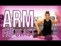 | Arm Fat Blaster | POP Pilates for Beginners This 15 minute, full length arm workout will tone and sculpt your shoulders, triceps, biceps, back, and total upper body WITHOUT using a single dumbbell. POP Pilates and Blogilates workouts are well known for helping you get fit without using any equipment while having fun. You can use your own bodyweight and still get amazing results!
♥ Get all my workout calendars and read my blog: http://www.blogilates.com
♥ MY ACTIVEWEAR: http://www.popflexactive.com
♥ Get the Blogilates App FREE in the App Store or Google Play Store!
♥ INSTAGRAM: @Blogilates
♥ SNAPCHAT: @Blogilates
♥ FACEBOOK: http://www.facebook.com/blogilates
♥ TWITTER: http://www.twitter.com/blogilates
******
Cassey Ho is an award-winning fitness instructor, entrepreneur and online personality. She is the creator of Blogilates, the #1 female fitness channel on Youtube. In a revolutionary partnership, Cassey's unique format, POP Pilates© which launched on Youtube in 2009, has become a live class that can be taken at every 24 Hr Fitness gym in the US. She's the author of the best-selling book, Hot Body Year Round and is the designer of her own activewear line, POPFLEX.
***
DISCLAIMER:
Blogilates and oGorgeous Inc. strongly recommend that you consult with your physician before beginning any exercise program.
You should be in good physical condition and be able to participate in the exercise.
You should understand that when participating in any exercise or exercise program, there is the possibility of physical injury. If you engage in this exercise or exercise program, you agree that you do so at your own risk, are voluntarily participating in these activities, assume all risk of injury to yourself, and agree to release and discharge Blogilates and oGorgeous Inc. from any and all claims or causes of action, known or unknown, arising out of Blogilates' and oGorgeous Inc.'s negligence. 15 min - 24 Oct 2016 |
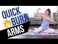 | Quick Burn Arms! Incredible Arm Toning Workout - no equipment, no pushups! I'm going to shape your arms sooooooo GOOD with this arm routine that uses NO WEIGHTS, NO DUMBBELLS, and NO PUSHUPS! Uhh yeah. It's possible. If you loved 6 min to Sexy Arms, you will LOVE this new updated at-home POP Pilates arm exercise routine. Have fun!
The moves are:
1. Goal Post Puncher
2. Shoulder Pulses
3. Back Behinds
4. Triangle Pushes
5. Inverted Arm Circles
6. Prayer Pulse
♥ Get all my workout calendars and read my blog: http://www.blogilates.com
♥ Get the Blogilates App FREE in the App Store or Google Play Store!
♥ MY WATERBOTTLES & CUTE ACTIVEWEAR: http://www.blogilatesdesigns.com
♥ INSTAGRAM: @Blogilates
♥ SNAPCHAT: @Blogilates
♥ FACEBOOK: http://www.facebook.com/blogilates
♥ TWITTER: http://www.twitter.com/blogilates
******
Cassey Ho is an award-winning fitness instructor, entrepreneur and online personality. As the creator behind Blogilates, the #1 female fitness channel on YouTube, she’s transformed millions of lives through helping them achieve their strength and weight-loss goals. She focuses on making fitness fun and the results are evident. Cassey's unique format, POP Pilates©, which launched as a workout video on YouTube in 2009, has become a live fitness class that can be taken at gyms all over the world with over 3,000 POP Pilates classes being taught monthly. Her authenticity continues to shine through, making her one of the most relatable fitness icons online and beyond. She's also the author of the best-selling book, Hot Body Year Round and is the designer of her own activewear line, POPFLEX.
With a wide range of free workout videos available, Cassey's channel focuses on ab exercises, butt & thigh exercises, arm exercises, pilates, cardio routines, fat burning workouts, high intensity interval training workouts (HIIT), stretching and flexibility routines and so much more!
***
DISCLAIMER:
Blogilates and oGorgeous Inc. strongly recommend that you consult with your physician before beginning any exercise program.
You should be in good physical condition and be able to participate in the exercise.
You should understand that when participating in any exercise or exercise program, there is the possibility of physical injury. If you engage in this exercise or exercise program, you agree that you do so at your own risk, are voluntarily participating in these activities, assume all risk of injury to yourself, and agree to release and discharge Blogilates and oGorgeous Inc. from any and all claims or causes of action, known or unknown, arising out of Blogilates' and oGorgeous Inc.'s negligence. 8 min - 17 Apr 2016 |
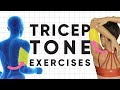 | 5 Tricep Isolation Exercises to Blast Back Arm Fat Get my brand new yoga mat: http://bit.ly/pfyogamats
SOOOO many of you guys commented on my Underbutt video saying you wanted to see a killer tricep isolation workout. Well, here it is... with emphasis on the killer part! Hope you guys like it!!
These five equipment-free, at home exercises will really target and strengthen your triceps, which will increase muscle tone on the back of the arm.
We'll be doing each move for 1:30 with, you guessed it, no breaks!
1. Seated Triceps
2. Elevated Tricep Pulses
3. Tricep Press Backs
4. Mermaid Triceps (Right)
5. Mermaid Triceps (Left)
Workout starts at 1:35!
Here is where I get all of my music! Epidemic Sound: https://goo.gl/Nj4ZMg
My outfit & yoga mat are from: http://www.popflexactive.com
******
Cassey Ho is an award-winning fitness instructor, entrepreneur and online personality. As the creator behind Blogilates, the #1 female fitness channel on YouTube, she’s transformed millions of lives through helping them achieve their strength and weight-loss goals. She focuses on making fitness fun and the results are evident. Cassey's unique format, POP Pilates©, which launched as a workout video on YouTube in 2009, has become a live fitness class that can be taken at gyms all over the world with over 3,000 POP Pilates classes being taught monthly. Her authenticity continues to shine through, making her one of the most relatable fitness icons online and beyond. She's also the author of the best-selling book, Hot Body Year Round and is the designer of her own activewear line, POPFLEX.
With a wide range of free workout videos available, Cassey's channel focuses on ab exercises, butt & thigh exercises, arm exercises, pilates, cardio routines, fat burning workouts, high intensity interval training workouts (HIIT), stretching and flexibility routines and so much more!
***
DISCLAIMER:
Blogilates and oGorgeous Inc. strongly recommend that you consult with your physician before beginning any exercise program.
You should be in good physical condition and be able to participate in the exercise.
You should understand that when participating in any exercise or exercise program, there is the possibility of physical injury. If you engage in this exercise or exercise program, you agree that you do so at your own risk, are voluntarily participating in these activities, assume all risk of injury to yourself, and agree to release and discharge Blogilates and oGorgeous Inc. from any and all claims or causes of action, known or unknown, arising out of Blogilates' and oGorgeous Inc.'s negligence. 11 min - 5 Aug 2018 |
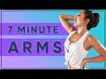 | 7 Minutes to Fabulous Arms! At Home No Equipment Workout You guys have been asking for a 7 minute arm workout, so here it is!! It's got my first EVER weightless bicep exercise! You ready to feel the burn in your biceps, triceps & shoulders for the next seven minutes?! Best upper body workout ever.
Each of the seven moves will be done for one minute with NO rest in between:
1. United biceps
2. Fist circles forward
3. Fist circles backward
4. Chest press aways
5. Angel arms
6. Prayer pulse
7. Palm press triceps
#armworkout #pilates #poppilates #blogilates #noequipmentworkout
Workout starts at 1:26!
Here is where I get all of my music! Epidemic Sound: https://goo.gl/Nj4ZMg
My outfit & yoga mat are from: http://www.popflexactive.com
******
Cassey Ho is an award-winning fitness instructor, entrepreneur and online personality. As the creator behind Blogilates, the #1 female fitness channel on YouTube, she’s transformed millions of lives through helping them achieve their strength and weight-loss goals. She focuses on making fitness fun and the results are evident. Cassey's unique format, POP Pilates©, which launched as a workout video on YouTube in 2009, has become a live fitness class that can be taken at gyms all over the world with over 3,000 POP Pilates classes being taught monthly. Her authenticity continues to shine through, making her one of the most relatable fitness icons online and beyond. She's also the author of the best-selling book, Hot Body Year Round and is the designer of her own activewear line, POPFLEX.
With a wide range of free workout videos available, Cassey's channel focuses on ab exercises, butt & thigh exercises, arm exercises, pilates, cardio routines, fat burning workouts, high intensity interval training workouts (HIIT), stretching and flexibility routines and so much more!
***
DISCLAIMER:
Blogilates and oGorgeous Inc. strongly recommend that you consult with your physician before beginning any exercise program.
You should be in good physical condition and be able to participate in the exercise.
You should understand that when participating in any exercise or exercise program, there is the possibility of physical injury. If you engage in this exercise or exercise program, you agree that you do so at your own risk, are voluntarily participating in these activities, assume all risk of injury to yourself, and agree to release and discharge Blogilates and oGorgeous Inc. from any and all claims or causes of action, known or unknown, arising out of Blogilates' and oGorgeous Inc.'s negligence. 11 min - 9 Dec 2018 |
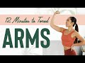 | 12 Minutes to Toned Arms Workout Welcome to the "12 Minutes to Toned" series!! I'll be releasing a brand new workout for you every week for the next 6 weeks focused on a different area of your body! Today, we are focusing on your upper body and arms, specifically your shoulders, triceps, biceps, chest, back, and traps! I hope this workout helps you find the joy in your movement. I know you will be feeling a sore but so strong once you finish!
Your moves for this workout include: prayer pulses, tricep dips, robot arms, half cobra pushups, walnut crushers, up up down downs and milk jugs. Oh and don't forget to leave a comment if you like the new set!! I'm in love!
Here is where I get all of my music! Epidemic Sound: http://share.epidemicsound.com/sgFTn
My yoga mat is from my shop: http://www.popflexactive.com
******
Cassey Ho is an award-winning fitness instructor, entrepreneur and online personality. As the creator behind Blogilates, the #1 female fitness channel on YouTube, she’s transformed millions of lives through helping them achieve their strength and weight-loss goals. She focuses on making fitness fun and the results are evident. Cassey's unique format, POP Pilates©, which launched as a workout video on YouTube in 2009, has become a live fitness class that can be taken at gyms all over the world with over 3,000 POP Pilates classes being taught monthly. Her authenticity continues to shine through, making her one of the most relatable fitness icons online and beyond. She's also the author of the best-selling book, Hot Body Year Round and is the designer of her own activewear line, POPFLEX.
With a wide range of free workout videos available, Cassey's channel focuses on ab exercises, butt & thigh exercises, arm exercises, pilates, cardio routines, fat burning workouts, high intensity interval training workouts (HIIT), stretching and flexibility routines and so much more!
***
DISCLAIMER:
Blogilates and oGorgeous Inc. strongly recommend that you consult with your physician before beginning any exercise program.
You should be in good physical condition and be able to participate in the exercise.
You should understand that when participating in any exercise or exercise program, there is the possibility of physical injury. If you engage in this exercise or exercise program, you agree that you do so at your own risk, are voluntarily participating in these activities, assume all risk of injury to yourself, and agree to release and discharge Blogilates and oGorgeous Inc. from any and all claims or causes of action, known or unknown, arising out of Blogilates' and oGorgeous Inc.'s negligence. 16 min - 20 Jan 2020 |
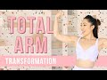 | 10 Minute Arm Toner | Total Body Transformation Workout You guys, today's Total Body Transformation arm workout is gonna be your BIGGEST CHALLENGE YET!!! That's because we're doing this with weights. YUP. If you don't have weights, you can also do this workout without them, but I want you to push yourself a little harder today and find 2 equally weighted water bottles, books, or anything you can grab!!!
You have 8 arm moves today, starting with a shoulder burn, then moving to triceps, with a little bit of biceps at the end. We'll do each for 1 minute with a 15 second break in between. They are:
1. Front Raise
2. Side Raise
3. Elevated Bicep Curl
4. Tricep Kickbacks
5. Overhead triceps
6. Upright Row
7. Bicep Curl to Shoulder Press
8. Shoulder Press Pulses
Workout starts at 2:42!
Here is where I get all of my music! Epidemic Sound: http://share.epidemicsound.com/sgFTn
Yoga mat is from: http://www.popflexactive.com
******
Cassey Ho is an award-winning fitness instructor, entrepreneur and online personality. As the creator behind Blogilates, the #1 female fitness channel on YouTube, she’s transformed millions of lives through helping them achieve their strength and weight-loss goals. She focuses on making fitness fun and the results are evident. Cassey's unique format, POP Pilates©, which launched as a workout video on YouTube in 2009, has become a live fitness class that can be taken at gyms all over the world with over 3,000 POP Pilates classes being taught monthly. Her authenticity continues to shine through, making her one of the most relatable fitness icons online and beyond. She's also the author of the best-selling book, Hot Body Year Round and is the designer of her own activewear line, POPFLEX.
With a wide range of free workout videos available, Cassey's channel focuses on ab exercises, butt & thigh exercises, arm exercises, pilates, cardio routines, fat burning workouts, high intensity interval training workouts (HIIT), stretching and flexibility routines and so much more!
***
DISCLAIMER:
Blogilates and oGorgeous Inc. strongly recommend that you consult with your physician before beginning any exercise program.
You should be in good physical condition and be able to participate in the exercise.
You should understand that when participating in any exercise or exercise program, there is the possibility of physical injury. If you engage in this exercise or exercise program, you agree that you do so at your own risk, are voluntarily participating in these activities, assume all risk of injury to yourself, and agree to release and discharge Blogilates and oGorgeous Inc. from any and all claims or causes of action, known or unknown, arising out of Blogilates' and oGorgeous Inc.'s negligence. 14 min - 15 Mar 2020 |
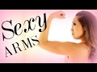 | 6 Min to Sexy Arms! This is the hardest arm workout you will ever do using absolutely no weights! My shoulders felt so hard after it! It was pretty cool.
♥ CHECK OUT MY DVD: http://www.poppilatesdvd.com
♥ INSPIRATIONAL SHIRTS: http://www.blogilatesdesigns.com
♥ SUBSCRIBE: http://bit.ly/blogilatesyt
♥ BLOG: http://www.blogilates.com
♥ FB: http://www.facebook.com/blogilates
♥ TWEET: http://www.twitter.com/blogilates
♥ TUMBLR: http://www.blogilates.tumblr.com
♥ PINTEREST: http://pinterest.com/blogilates
♥ INSTAGRAM: http://www.instagram.com/blogilates
******
Cassey Ho is an award-winning fitness instructor, entrepreneur and online personality. As the creator behind Blogilates, the #1 female fitness channel on YouTube, she’s transformed millions of lives through helping them achieve their strength and weight-loss goals. She focuses on making fitness fun and the results are evident. Cassey's unique format, POP Pilates©, which launched as a workout video on YouTube in 2009, has become a live fitness class that can be taken at gyms all over the world with over 3,000 POP Pilates classes being taught monthly. Her authenticity continues to shine through, making her one of the most relatable fitness icons online and beyond. She's also the author of the best-selling book, Hot Body Year Round and is the designer of her own activewear line, POPFLEX.
With a wide range of free workout videos available, Cassey's channel focuses on ab exercises, butt & thigh exercises, arm exercises, pilates, cardio routines, fat burning workouts, high intensity interval training workouts (HIIT), stretching and flexibility routines and so much more!
***
DISCLAIMER:
Blogilates and oGorgeous Inc. strongly recommend that you consult with your physician before beginning any exercise program.
You should be in good physical condition and be able to participate in the exercise.
You should understand that when participating in any exercise or exercise program, there is the possibility of physical injury. If you engage in this exercise or exercise program, you agree that you do so at your own risk, are voluntarily participating in these activities, assume all risk of injury to yourself, and agree to release and discharge Blogilates and oGorgeous Inc. from any and all claims or causes of action, known or unknown, arising out of Blogilates' and oGorgeous Inc.'s negligence. 9 min - 10 Nov 2014 |
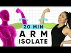 | 20 Minute Weightless Arm Isolate Workout | At-home, no equipment arm toning exercises! So glad you guys were really feeling the burn from my last no-equipment workout!! This week we're targeting one of my fave parts of the body... the arms!! Don't you just feel SO strong after and intense arm work out?!
This full-length workout has 20 moves targeting the triceps, biceps, shoulders, chest & back! Ready to go SUPER hard for 20 minutes?! I want you guys to remember to push through and do as many reps as you can, especially when you start to get tired! I'lll be cheering you on (and in pain with you) the whole way!
1. Arm Circles (FWD)
2. Arm Circles (BWD)
3. Angel Arm (R)
4. Angel Arm (L)
5. Angel Arm Double
6. Prayer Pulses
7. Side Push (R)
8. Side Push (L)
9. Half Cobra Pushup
10. Staggered Half Cobra (R)
11. Staggered Hald Cobra (L)
12. Tricep Dips
13. Back Behinds
14. Walnut Crushers
15. Robot Arms
16. United Biceps
17. Curly Arms
18. Milk Jugs
19. Triangle Arms
20. Up Up Down Down
Get my socks: https://bit.ly/2Uxxy9C
Get my yoga mat: https://bit.ly/2TzaxpF
Here is where I get all of my music! Epidemic Sound: http://share.epidemicsound.com/sgFTn
******
Cassey Ho is an award-winning fitness instructor, entrepreneur and online personality. As the creator behind Blogilates, the #1 female fitness channel on YouTube, she’s transformed millions of lives through helping them achieve their strength and weight-loss goals. She focuses on making fitness fun and the results are evident. Cassey's unique format, POP Pilates©, which launched as a workout video on YouTube in 2009, has become a live fitness class that can be taken at gyms all over the world with over 3,000 POP Pilates classes being taught monthly. Her authenticity continues to shine through, making her one of the most relatable fitness icons online and beyond. She's also the author of the best-selling book, Hot Body Year Round and is the designer of her own activewear line, POPFLEX.
With a wide range of free workout videos available, Cassey's channel focuses on ab exercises, butt & thigh exercises, arm exercises, pilates, cardio routines, fat burning workouts, high intensity interval training workouts (HIIT), stretching and flexibility routines and so much more!
***
DISCLAIMER:
Blogilates and oGorgeous Inc. strongly recommend that you consult with your physician before beginning any exercise program.
You should be in good physical condition and be able to participate in the exercise.
You should understand that when participating in any exercise or exercise program, there is the possibility of physical injury. If you engage in this exercise or exercise program, you agree that you do so at your own risk, are voluntarily participating in these activities, assume all risk of injury to yourself, and agree to release and discharge Blogilates and oGorgeous Inc. from any and all claims or causes of action, known or unknown, arising out of Blogilates' and oGorgeous Inc.'s negligence. 23 min - 11 Mar 2019 |
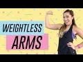 | Weightless Arm Workout | POP Pilates I am IN LOVE with this arm workout that requires no equipment, no pushups, and no weights! WHAT! YUP. I am going to teach you how to tone up your arms, shoulders, back, biceps, and chest! You can literally do this in bed. The exercises we're doing today are:
1. Elbows
2. Overheads
3. Prayer Circles
4. Prayer Squares
5. Prayer Pulses
Blog post with details: http://www.blogilates.com/blog/2016/07/10/popflex-pop-up-shop/
See POPFLEX: http://www.popflexactive.com
♥ Get all my workout calendars and read my blog: http://www.blogilates.com
♥ MY ACTIVEWEAR: http://www.popflexactive.com
♥ Get the Blogilates App FREE in the App Store or Google Play Store!
♥ INSTAGRAM: @Blogilates
♥ SNAPCHAT: @Blogilates
♥ FACEBOOK: http://www.facebook.com/blogilates
♥ TWITTER: http://www.twitter.com/blogilates
******
Cassey Ho is an award-winning fitness instructor, entrepreneur and online personality. She is the creator of Blogilates, the #1 female fitness channel on Youtube. In a revolutionary partnership, Cassey's unique format, POP Pilates© which launched on Youtube in 2009, has become a live class that can be taken at every 24 Hr Fitness gym in the US. She's the author of the best-selling book, Hot Body Year Round and is the designer of her own activewear line, POPFLEX.
***
DISCLAIMER:
Blogilates and oGorgeous Inc. strongly recommend that you consult with your physician before beginning any exercise program.
You should be in good physical condition and be able to participate in the exercise.
You should understand that when participating in any exercise or exercise program, there is the possibility of physical injury. If you engage in this exercise or exercise program, you agree that you do so at your own risk, are voluntarily participating in these activities, assume all risk of injury to yourself, and agree to release and discharge Blogilates and oGorgeous Inc. from any and all claims or causes of action, known or unknown, arising out of Blogilates' and oGorgeous Inc.'s negligence. 10 min - 11 Jul 2016 |
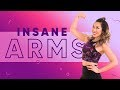 | INSANE Weightless Arms Workout | At Home No Equipment Upper Body Exercises Ever wanna get a solid arm workout in but you don't have any weights or dumbbells? Yea me too - so that's why I LOVE these weightless arm workouts that require zero equipment...so you can easily do them at home, in your apartment, in your living room, in your hotel room, or in your bedroom!
We will be targeting your shoulders, chest, biceps, and upper back with the following POP Pilates exercises:
- Pinky Propellers
- Walnut Crushers
- Elbow Pushbacks
- Golf Balls
- Triangle Pushes
- Back Behinds
- Prayer Pulses
Here is where I get all of my music! Epidemic Sound: https://goo.gl/Nj4ZMg
My outfit & yoga mat are from: http://www.popflexactive.com
******
Cassey Ho is an award-winning fitness instructor, entrepreneur and online personality. As the creator behind Blogilates, the #1 female fitness channel on YouTube, she’s transformed millions of lives through helping them achieve their strength and weight-loss goals. She focuses on making fitness fun and the results are evident. Cassey's unique format, POP Pilates©, which launched as a workout video on YouTube in 2009, has become a live fitness class that can be taken at gyms all over the world with over 3,000 POP Pilates classes being taught monthly. Her authenticity continues to shine through, making her one of the most relatable fitness icons online and beyond. She's also the author of the best-selling book, Hot Body Year Round and is the designer of her own activewear line, POPFLEX.
With a wide range of free workout videos available, Cassey's channel focuses on ab exercises, butt & thigh exercises, arm exercises, pilates, cardio routines, fat burning workouts, high intensity interval training workouts (HIIT), stretching and flexibility routines and so much more!
***
DISCLAIMER:
Blogilates and oGorgeous Inc. strongly recommend that you consult with your physician before beginning any exercise program.
You should be in good physical condition and be able to participate in the exercise.
You should understand that when participating in any exercise or exercise program, there is the possibility of physical injury. If you engage in this exercise or exercise program, you agree that you do so at your own risk, are voluntarily participating in these activities, assume all risk of injury to yourself, and agree to release and discharge Blogilates and oGorgeous Inc. from any and all claims or causes of action, known or unknown, arising out of Blogilates' and oGorgeous Inc.'s negligence. 8 min - 26 Feb 2018 |
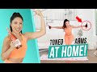 | Toned Arms at Home Workout! Apartment Friendly ☺️ I asked you guys what workouts you wanna do at home and a lot of you asked for weights. And because not everyone has dumbbells, I decided to get creative.
Why not wine bottles (or water bottles or soup cans etc)?! I tested this on TikTok and you guys LOVED it, so here it is: my first full length wine bottle arm workout!
Your biceps, triceps & shoulders are gonna be SHAKING once you're done with this! You've got 10 moves, one minute on, 10 seconds off (don't worry, there's a timer).
1. Bicep Curls
2. Tricep Pulse
3. Prayer Pulse
4. Shoulder Press
5. Double Tray Opens
6. Front Raises
7. Reverse Flys
8. Press & Close
9. L Raises
10. Upright Row
Workout starts at 1:41!
Follow me on TiKTok: https://www.tiktok.com/@blogilates
Here is where I get all of my music! Epidemic Sound: http://share.epidemicsound.com/sgFTn
My outfit & yoga mat are from: http://www.popflexactive.com
******
Cassey Ho is an award-winning fitness instructor, entrepreneur and online personality. As the creator behind Blogilates, the #1 female fitness channel on YouTube, she’s transformed millions of lives through helping them achieve their strength and weight-loss goals. She focuses on making fitness fun and the results are evident. Cassey's unique format, POP Pilates©, which launched as a workout video on YouTube in 2009, has become a live fitness class that can be taken at gyms all over the world with over 3,000 POP Pilates classes being taught monthly. Her authenticity continues to shine through, making her one of the most relatable fitness icons online and beyond. She's also the author of the best-selling book, Hot Body Year Round and is the designer of her own activewear line, POPFLEX.
With a wide range of free workout videos available, Cassey's channel focuses on ab exercises, butt & thigh exercises, arm exercises, pilates, cardio routines, fat burning workouts, high intensity interval training workouts (HIIT), stretching and flexibility routines and so much more!
***
DISCLAIMER:
Blogilates and oGorgeous Inc. strongly recommend that you consult with your physician before beginning any exercise program.
You should be in good physical condition and be able to participate in the exercise.
You should understand that when participating in any exercise or exercise program, there is the possibility of physical injury. If you engage in this exercise or exercise program, you agree that you do so at your own risk, are voluntarily participating in these activities, assume all risk of injury to yourself, and agree to release and discharge Blogilates and oGorgeous Inc. from any and all claims or causes of action, known or unknown, arising out of Blogilates' and oGorgeous Inc.'s negligence. 15 min - 12 Apr 2020 |
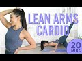 | 20 Minute Lean Arms Cardio Pilates Workout | 7 Day Arm Challenge (do this video every day) Join me for the #7DayArmChallenge!!!
Two challenges on the May calendar done, two to go!!! I know you can do it. Last week we tackled lower body, so this week is alllll about the upper body! The 7 Day Arm Challenge will tighten & tone your arms, shoulders and back. You guys are gonna love it!!!
7 DAY ARM CHALLENGE:
Purpose: To sculpt and tone your arms in 7 days!
Begins: Monday May 18, 2020
Ends: Sunday May 24, 2020
Length: 7 days
Daily commitment: 20-30 min
How it works:
Day 1-7: Take a before picture of your arms & complete the workouts listed for the day. You can even film yourself doing these and have a cool progress video that you can upload to Instagram, TikTok, or YouTube at the end of the week!
Day 1-7: Make sure to drink at least 64 oz of water a day for all 7 days.
Day 1-7: Make sure to reduce your intake of refined/processed carbs (bread, crackers, cereal, pastries etc.) and replace with whole vegetables and fruits for 7 days.
End of Day 7: Take an after picture or video of your arms and upload the results to Instagram, TikTok, or YouTube! Make sure to include the #7DayArmChallenge hashtag and tag @blogilates so other users can find the challenge!
LEAN ARMS CARDIO PILATES
1. Lunging pull downs
2. Oil riggers
3. Plank jack shoulder taps
4. Tricep pulses
5. Mountain climbers
6. Single arm push (R)
7. Single arm push (L)
We'll do each move for 45 seconds, with a 15 second break between. Let's do this!!!
Day 1
Lean Arms Cardio Pilates (20 min): https://youtu.be/Ai8KfyJ69Bc
Day 2
Lean Arms Cardio Pilates (20 min): https://youtu.be/Ai8KfyJ69Bc
Day 3
Lean Arms Cardio Pilates (20 min): https://youtu.be/Ai8KfyJ69Bc
Day 4
Lean Arms Cardio Pilates (20 min): https://youtu.be/Ai8KfyJ69Bc
Beautiful Arm Sculpt (10 min)
Day 5
Lean Arms Cardio Pilates (20 min): https://youtu.be/Ai8KfyJ69Bc
Beautiful Arm Sculpt (10 min)
Day 6
Lean Arms Cardio Pilates (20 min): https://youtu.be/Ai8KfyJ69Bc
Beautiful Arm Sculpt (10 min)
Day 7
Lean Arms Cardio Pilates (20 min): https://youtu.be/Ai8KfyJ69Bc
Beautiful Arm Sculpt (10 min)
#armworkout #pilates #poppilates #blogilates #challenge
Here is where I get all of my music! Epidemic Sound: http://share.epidemicsound.com/sgFTn
My outfit & yoga mat are from: http://www.popflexactive.com
******
Cassey Ho is an award-winning fitness instructor, entrepreneur and online personality. As the creator behind Blogilates, the #1 female fitness channel on YouTube, she’s transformed millions of lives through helping them achieve their strength and weight-loss goals. She focuses on making fitness fun and the results are evident. Cassey's unique format, POP Pilates©, which launched as a workout video on YouTube in 2009, has become a live fitness class that can be taken at gyms all over the world with over 3,000 POP Pilates classes being taught monthly. Her authenticity continues to shine through, making her one of the most relatable fitness icons online and beyond. She's also the author of the best-selling book, Hot Body Year Round and is the designer of her own activewear line, POPFLEX.
With a wide range of free workout videos available, Cassey's channel focuses on ab exercises, butt & thigh exercises, arm exercises, pilates, cardio routines, fat burning workouts, high intensity interval training workouts (HIIT), stretching and flexibility routines and so much more!
***
DISCLAIMER:
Blogilates and oGorgeous Inc. strongly recommend that you consult with your physician before beginning any exercise program.
You should be in good physical condition and be able to participate in the exercise.
You should understand that when participating in any exercise or exercise program, there is the possibility of physical injury. If you engage in this exercise or exercise program, you agree that you do so at your own risk, are voluntarily participating in these activities, assume all risk of injury to yourself, and agree to release and discharge Blogilates and oGorgeous Inc. from any and all claims or causes of action, known or unknown, arising out of Blogilates' and oGorgeous Inc.'s negligence. 24 min - 17 May 2020 |
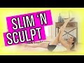 | Slim 'n Sculpt! Beginner's POP Pilates If you're new to POP Pilates or are looking to build a strong foundation with your Pilates practice, this video will show you how to get all of your form and technique perfect! This is an incredible beginner's tutorial to POP Pilates for total body slimming and sculpting.
"Pilates? Thought you said Pie & Lattes!" Get my tank here: http://www.ogorgeous.com/products/tops
Download the new workout calendar here: http://www.blogilates.com
Follow the beginner's workout calendar: http://bit.ly/begin2015
And follow my new instagram account: @Blogilatesdesigns. Be sure to use the hashtag #blogilatesdesigns to be considered for "POPster of the Week" and a $25 gift card every Friday!
♥ I HAVE A NEW DVD: http://www.poppilatesdvd.com
♥ INSPIRATIONAL SHIRTS: http://www.shopblogilates.com
♥ SUBSCRIBE: http://bit.ly/blogilatesyt
♥ BLOG: http://www.blogilates.com
♥ FB: http://www.facebook.com/blogilates
♥ TWEET: http://www.twitter.com/blogilates
♥ TUMBLR: http://www.blogilates.tumblr.com
♥ PINTEREST: http://pinterest.com/blogilates
♥ INSTAGRAM: http://www.instagram.com/blogilates
******
Cassey Ho is a certified Pilates and fitness instructor, named Greatist's Top 25 Health & Fitness Influencers in the World alongside Michelle Obama. She is the winner of the "Social Fitness" Shorty Award and FITNESS Magazine named her their "Best Healthy Living Blogger". She's been featured on Dr. Oz, EXTRA TV, The Steve Harvey Show, COSMPOLITAN Magazine, SHAPE Magazine, Ladies Home Journal, SELF Magazine, NY Times, LA Times, and many more.
***
DISCLAIMER:
Blogilates and oGorgeous Inc. strongly recommend that you consult with your physician before beginning any exercise program.
You should be in good physical condition and be able to participate in the exercise.
You should understand that when participating in any exercise or exercise program, there is the possibility of physical injury. If you engage in this exercise or exercise program, you agree that you do so at your own risk, are voluntarily participating in these activities, assume all risk of injury to yourself, and agree to release and discharge Blogilates and oGorgeous Inc. from any and all claims or causes of action, known or unknown, arising out of Blogilates' and oGorgeous Inc.'s negligence. 18 min - 2 Aug 2015 |
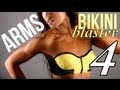 | BIKINI BLASTER 4: Awesomesauce Arms ♥ WORKOUT CALENDAR: http://blogilates.com/calendar/june-2012-blogilates-workout-calendar (get the secret password by signing up 4 my newsletter)
♥ CLOTHES: http://www.shopblogilates.com
♥ FACEBOOK: http://www.facebook.com/blogilates
♥ TWITTER: http://www.twitter.com/blogilates
♥ TUMBLR: http://www.blogilates.tumblr.com
♥ PINTEREST: http://pinterest.com/blogilates
♥ INSTAGRAM: http://web.stagram.com/n/blogilates/
This is part 4 of your Bikini Blaster series! This is an awesome arm workout that will get your shoulders, triceps, and biceps super toned up for tank top season. You'll just need a pair of dumbbells.
BIKINI BLASTER PLAYLIST: http://www.youtube.com/playlist?list=PLF4B69F5F9CE08F66
Special THANKS to PRO FITNESS EDGE for letting me use the gym to film!!! http://profitnessedge.com/ 20 min - 7 Jun 2012 |
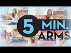 | 5 Minute Toned Arms 1 minute x 5 arm sculpting moves. Your best 5 min arm slimming workout. Can you keep up with the timer? YES YOU CAN! The fastest most effective arm toning workout ever!
♥ I HAVE A NEW DVD: http://www.poppilatesdvd.com
♥ INSPIRATIONAL SHIRTS: http://www.shopblogilates.com
♥ SUBSCRIBE: http://bit.ly/blogilatesyt
♥ BLOG: http://www.blogilates.com
♥ FB: http://www.facebook.com/blogilates
♥ TWEET: http://www.twitter.com/blogilates
♥ TUMBLR: http://www.blogilates.tumblr.com
♥ PINTEREST: http://pinterest.com/blogilates
♥ INSTAGRAM: http://www.instagram.com/blogilates
******
Cassey Ho is a certified Pilates and fitness instructor, named Greatist's Top 25 Health & Fitness Influencers in the World alongside Michelle Obama. She is the winner of the "Social Fitness" Shorty Award and FITNESS Magazine named her their "Best Healthy Living Blogger". She's been featured on Dr. Oz, EXTRA TV, The Steve Harvey Show, COSMPOLITAN Magazine, SHAPE Magazine, Ladies Home Journal, SELF Magazine, NY Times, LA Times, and many more.
***
DISCLAIMER:
Blogilates and oGorgeous Inc. strongly recommend that you consult with your physician before beginning any exercise program.
You should be in good physical condition and be able to participate in the exercise.
You should understand that when participating in any exercise or exercise program, there is the possibility of physical injury. If you engage in this exercise or exercise program, you agree that you do so at your own risk, are voluntarily participating in these activities, assume all risk of injury to yourself, and agree to release and discharge Blogilates and oGorgeous Inc. from any and all claims or causes of action, known or unknown, arising out of Blogilates' and oGorgeous Inc.'s negligence. 7 min - 23 Mar 2015 |
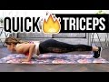 | Quick Burn TRICEP WORKOUT! Best Tank Top Triceps & Toned Arms Routine with NO Equipment! This workout targets your triceps like crazy! I will take you through 4 POP Pilates exercises that will strengthen your arms and make them look sleek and sexy without using any equipment. You don't need dumbbells or the gym! Just your bodyweight. If you're looking to shave off your "bat wings", then give this routine a try. It's tough, but you're TOUGHER!
Here are the exercises:
1. Half Cobra Pushup
2. Baby Tiger
3. Child's Push
4. Tricep Pushup
♥ Get all my workout calendars and read my blog: http://www.blogilates.com
♥ MY ACTIVEWEAR: http://www.popflexactive.com
♥ Get the Blogilates App FREE in the App Store or Google Play Store!
♥ INSTAGRAM: @Blogilates
♥ SNAPCHAT: @Blogilates
♥ FACEBOOK: http://www.facebook.com/blogilates
♥ TWITTER: http://www.twitter.com/blogilates
******
Cassey Ho is an award-winning fitness instructor, entrepreneur and online personality. She is the creator of Blogilates, the #1 female fitness channel on Youtube. In a revolutionary partnership, Cassey's unique format, POP Pilates© which launched on Youtube in 2009, has become a live class that can be taken at every 24 Hr Fitness gym in the US. She's the author of the best-selling book, Hot Body Year Round and is the designer of her own activewear line, POPFLEX.
***
DISCLAIMER:
Blogilates and oGorgeous Inc. strongly recommend that you consult with your physician before beginning any exercise program.
You should be in good physical condition and be able to participate in the exercise.
You should understand that when participating in any exercise or exercise program, there is the possibility of physical injury. If you engage in this exercise or exercise program, you agree that you do so at your own risk, are voluntarily participating in these activities, assume all risk of injury to yourself, and agree to release and discharge Blogilates and oGorgeous Inc. from any and all claims or causes of action, known or unknown, arising out of Blogilates' and oGorgeous Inc.'s negligence. 9 min - 13 Jun 2016 |
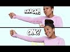 | Do This Every Morning To Lose Flabby Arms ( Slimmer Arms In 7 Days! ) No Equipment Arm Workout IF YOUR READING THIS, JOIN THE FAM HIT SUBSCRIBE! ❤️
8 MINUTES to lean and toned arms! Who's down for this beginner-friendly fat loss challenge?!?
Getting rid of flabby arms can be challenging, especially when you workout at home and feel like you need weights to do all the correct moves. This is why i created a MORNING ROUTINE (that can be done any time of the day but i like to do it in the morning) that requires absolutely no equipment!
Here is the workout:
1. Large Arm Circles- 10 reps/direction
2. Small Arm Circles- 10 reps/direction
3. Arm Cross overs- 20 reps
4. Bodyweight curls- 20 reps
5. Bodyweight tricep press- 20 reps
6. Inchworm to press up- 10 reps
7. Plank reaches- 10 reps/side
8. Low plank press back- 20 reps
9. bodyweight dips- 20 reps
10. Tricep press- 20 reps
11. Jab cross- 10 reps/side
12. Table top reach- 10 reps/side
13. Push up to press back- 20 reps
14. Reverse Table top reaches-10 reps/side
15. Low plank hold- 20 seconds
Songs:
Like This- Spring Gang ft Moon
I Can't Deny- Snake City
OTHER VIDEOS
➡️Lower Body Sculpting- https://youtu.be/xaKaqa6b8v0
➡️7 Min HIIT Workout- https://youtu.be/4VC3uzz8U4o
➡️HIIT Weight loss Challenge- https://youtu.be/Bun5cI_QEA4
➡️Challenging Upper Body Workout- https://youtu.be/ZVxyxZCSV5Y
Follow my IG: https://www.instagram.com/growwithjo/
Pinterest: https://www.pinterest.ca/growwithjo/p...
Twitter: https://twitter.com/growwithjotalks
make sure to subscribe & turn on notifications for instant updates on my new videos! SUBSCRIBE TO MY CHANNEL 👉🏼 http://bit.ly/2subtojo
#bigbootytighttummy program 🌟http://bit.ly/2bbtt10 10 min - 31 Jul 2019 |
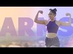 | Sexy Toned Arms Workout | 5 Moves to Your Fittest Arms This is the ultimate upper body workout that will hit your biceps, triceps, shoulders and back. You don't need any equipment and guess what?! There are ZERO pushups. But don't be fooled because you will still get a crazy good workout! You can sit or stand the entire time. But really focus on control and contacting the muscles you are working. Your upper body will be pumping when you're done! Let me know how burny it was in the comments below! And even challenge a friend to try this routine too. You will surprise them with what a great upper body workout you can get with no weights!
Here are the moves:
1. Arm Circles Forward
2. Arm Circles Backwards
3. Peek-A-Boos
4. Back Behinds
5. Reach Ups
♥ Get all my workout calendars and read my blog: http://www.blogilates.com
♥ MY ACTIVEWEAR: http://www.popflexactive.com
♥ Get the Blogilates App FREE in the App Store or Google Play Store!
♥ INSTAGRAM: http://www.instagram.com/Blogilates
♥ SNAPCHAT: https://snapchat.com/add/blogilates
♥ FACEBOOK: http://www.facebook.com/blogilates
♥ TWITTER: http://www.twitter.com/blogilates
******
Cassey Ho is an award-winning fitness instructor, entrepreneur and online personality. She is the creator of Blogilates, the #1 female fitness channel on Youtube. In a revolutionary partnership, Cassey's unique format, POP Pilates© which launched on Youtube in 2009, has become a live class that can be taken at every 24 Hr Fitness gym in the US. She's the author of the best-selling book, Hot Body Year Round and is the designer of her own activewear line, POPFLEX.
***
DISCLAIMER:
Blogilates and oGorgeous Inc. strongly recommend that you consult with your physician before beginning any exercise program.
You should be in good physical condition and be able to participate in the exercise.
You should understand that when participating in any exercise or exercise program, there is the possibility of physical injury. If you engage in this exercise or exercise program, you agree that you do so at your own risk, are voluntarily participating in these activities, assume all risk of injury to yourself, and agree to release and discharge Blogilates and oGorgeous Inc. from any and all claims or causes of action, known or unknown, arising out of Blogilates' and oGorgeous Inc.'s negligence. 9 min - 19 Mar 2017 |
How to Get Rid of Armpit Fat | Ask Cassey ♥ GET MY DVD: http://www.poppilatesdvd.com
♥ INSPIRATIONAL SHIRTS: http://www.shopblogilates.com
♥ BLOG: http://www.blogilates.com
♥ FB: http://www.facebook.com/blogilates
♥ TWEET: http://www.twitter.com/blogilates
♥ TUMBLR: http://www.blogilates.tumblr.com
♥ PINTEREST: http://pinterest.com/blogilates
♥ INSTAGRAM: http://web.stagram.com/n/blogilates/
*****
Ever wonder how to get rid of that nasty armpit fat, that bra bulge that sticks out from your tanks and strapless dresses? Here's how in 3 steps.
*****
Cassey Ho is a certified Pilates and fitness instructor, winner of YouTube Next Trainer, and was also recently named FITNESS Magazine's Best Healthy Living Blogger. 8 min - 22 Aug 2012 |
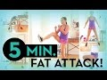 | 5 Minute Fat Attack! Want the quickest fat burning cardio workout in just 5 min? We don't have much time so GO HARD and give these moves your all: It's 50 secs on and 10 secs off.
High Knees
Squat Jumps
Lunge to Jacks
Jump Ins with Kick
Sumo Squat Pops
♥ I HAVE A NEW DVD: http://www.poppilatesdvd.com
♥ INSPIRATIONAL SHIRTS: http://www.shopblogilates.com
♥ SUBSCRIBE: http://bit.ly/blogilatesyt
♥ BLOG: http://www.blogilates.com
♥ FB: http://www.facebook.com/blogilates
♥ TWEET: http://www.twitter.com/blogilates
♥ TUMBLR: http://www.blogilates.tumblr.com
♥ PINTEREST: http://pinterest.com/blogilates
♥ INSTAGRAM: http://www.instagram.com/blogilates
******
Cassey Ho is a certified Pilates and fitness instructor, named Greatist's Top 25 Health & Fitness Influencers in the World alongside Michelle Obama. She is the winner of the "Social Fitness" Shorty Award and FITNESS Magazine named her their "Best Healthy Living Blogger". She's been featured on Dr. Oz, EXTRA TV, The Steve Harvey Show, COSMPOLITAN Magazine, SHAPE Magazine, Ladies Home Journal, SELF Magazine, NY Times, LA Times, and many more.
***
DISCLAIMER:
Blogilates and oGorgeous Inc. strongly recommend that you consult with your physician before beginning any exercise program.
You should be in good physical condition and be able to participate in the exercise.
You should understand that when participating in any exercise or exercise program, there is the possibility of physical injury. If you engage in this exercise or exercise program, you agree that you do so at your own risk, are voluntarily participating in these activities, assume all risk of injury to yourself, and agree to release and discharge Blogilates and oGorgeous Inc. from any and all claims or causes of action, known or unknown, arising out of Blogilates' and oGorgeous Inc.'s negligence. 6 min - 20 Apr 2015 |
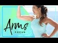 | ARMS FOCUS // 6-Week Body Toning Bootcamp #5 Want toned triceps, sculpted shoulders, and amazing arms for tank top season? This workout pairs fat burning cardio with weightless arm exercises for the most effective upper body routine! No dumbbells or equipment needed!
All music from Epidemic Sound (free 30 day trial): https://goo.gl/Nj4ZMg
You will do each exercise 45 sec through with 15 sec of rest in between. For a full 28 minute workout, you must repeat this sequence 4x through...PIIT style!
Your 7 moves are:
1. Mountain Climbers
2. Gecko
3. Tricep Kick n Dip Right
4. Hip Twist Plank Jack
5. Tricep Kick n Dip Left
6. Shoulder Push-Up
7. Triple Tricep Push-Up
The 6-Week challenge is to do the workout of the week (28 min) at least once that week. Do that for 6 consecutive weeks and you will be so much more than bikini body ready...you're gonna be life body ready!
My outfit & yoga mat are from: http://www.popflexactive.com
******
Cassey Ho is an award-winning fitness instructor, entrepreneur and online personality. She is the creator of Blogilates, the #1 female fitness channel on Youtube. In a revolutionary partnership, Cassey's unique format, POP Pilates© which launched on Youtube in 2009, has become a live class that can be taken at every 24 Hr Fitness gym in the US. She's the author of the best-selling book, Hot Body Year Round and is the designer of her own activewear line, POPFLEX.
***
DISCLAIMER:
Blogilates and oGorgeous Inc. strongly recommend that you consult with your physician before beginning any exercise program.
You should be in good physical condition and be able to participate in the exercise.
You should understand that when participating in any exercise or exercise program, there is the possibility of physical injury. If you engage in this exercise or exercise program, you agree that you do so at your own risk, are voluntarily participating in these activities, assume all risk of injury to yourself, and agree to release and discharge Blogilates and oGorgeous Inc. from any and all claims or causes of action, known or unknown, arising out of Blogilates' and oGorgeous Inc.'s negligence. 10 min - 14 May 2017 |
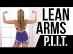 | Lean & Toned Arms // PIIT Join the PIIT28 Challenge at http://www.piit28.com
We are BACK AT IT again with PIIT - Pilates Intense Interval Training. This time, I'm focusing on targeting your arms and upper body to chisel them nice and lean. By integrating cardio moves with toning Pilates exercises, you get a quick and SUPER effective workout in one shot.
If you're following the workout calendar, do this video once. If this is your only workout today, do it 4x through for a complete workout that is right under 30 min.
♥ Get all my workout calendars and read my blog: http://www.blogilates.com
♥ Get the Blogilates App FREE in the App Store or Google Play Store!
♥ MY WATERBOTTLES & CUTE ACTIVEWEAR: http://www.blogilatesdesigns.com
♥ INSTAGRAM: @Blogilates
♥ FB: http://www.facebook.com/blogilates
♥ TWITTER: http://www.twitter.com/blogilates
******
Cassey Ho is an award-winning fitness instructor, entrepreneur and online personality. She is the creator of Blogilates, the #1 female fitness channel on Youtube. In a revolutionary partnership, Cassey's unique format, POP Pilates© which launched on Youtube in 2009, has become a live class that can be taken at every 24 Hr Fitness gym in the US. She's the author of the best-selling book, Hot Body Year Round and is the designer of her own activewear line.
***
DISCLAIMER:
Blogilates and oGorgeous Inc. strongly recommend that you consult with your physician before beginning any exercise program.
You should be in good physical condition and be able to participate in the exercise.
You should understand that when participating in any exercise or exercise program, there is the possibility of physical injury. If you engage in this exercise or exercise program, you agree that you do so at your own risk, are voluntarily participating in these activities, assume all risk of injury to yourself, and agree to release and discharge Blogilates and oGorgeous Inc. from any and all claims or causes of action, known or unknown, arising out of Blogilates' and oGorgeous Inc.'s negligence. 9 min - 25 Jan 2016 |
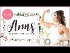 | How to Get Great Arms Down the Aisle | BRIDAL BOOTCAMP I LOVE working my arms! And one of the best times to show off your hard earned muscles is when you're walking down the aisle holding your fabulous bouquet!
In today's arm workout, I will show you how to get strong, toned, and sleek arms using no weights! You don't need a gym membership and you don't need any fancy equipment. You can do these at home, in your bedroom, in your hotel - literally anywhere! We'll attack your entire upper body - your back, your chest, your shoulders, your biceps, your triceps
If you wanna skip the intro and head straight to the workout, it begins at 1:46.
Every workout in the Blogilates Bridal Bootcamp is 10 minutes long with NO BREAKS. There are 10 moves that are done for 1 minute each, back to back. I'm training you this way to save you time while teaching your muscles to get stronger with intense moves in a very short amount of time.
The 10 arm exercises for your Bridal Bootcamp are:
1. Peek a Boo Chest
2. Back Behinds
3. Angel Arms
4. Criss Cross Arms
5. Reverse Palm Pushers
6. Half Cobra Pushup
7. Prayer Pulses
8. Wide Elbow to Palms
9. Inch Worm to Elbow
10. Up Up Down Downs
If you are starting to do some of your own wedding planning, I recommend you check out http://www.TheKnot.com. You can create your own wedding website for free as well as search for great vendors in your area.
BIG THANKS TO my friends at Lovesome Blossoms and DJZ Productions for the INCREDIBLE floral display and draping!
LOVESOME BLOSSOMS: https://www.instagram.com/lovesomeblossoms/
DJZ PRODUCTIONS: https://www.instagram.com/djz_productions/
Here is where I get all of my music! Epidemic Sound: https://goo.gl/Nj4ZMg
******
Cassey Ho is an award-winning fitness instructor, entrepreneur and online personality. As the creator behind Blogilates, the #1 female fitness channel on YouTube, she’s transformed millions of lives through helping them achieve their strength and weight-loss goals. She focuses on making fitness fun and the results are evident. Cassey's unique format, POP Pilates©, which launched as a workout video on YouTube in 2009, has become a live fitness class that can be taken at gyms all over the world with over 3,000 POP Pilates classes being taught monthly. Her authenticity continues to shine through, making her one of the most relatable fitness icons online and beyond. She's also the author of the best-selling book, Hot Body Year Round and is the designer of her own activewear line, POPFLEX.
With a wide range of free workout videos available, Cassey's channel focuses on ab exercises, butt & thigh exercises, arm exercises, pilates, cardio routines, fat burning workouts, high intensity interval training workouts (HIIT), stretching and flexibility routines and so much more!
***
DISCLAIMER:
Blogilates and oGorgeous Inc. strongly recommend that you consult with your physician before beginning any exercise program.
You should be in good physical condition and be able to participate in the exercise.
You should understand that when participating in any exercise or exercise program, there is the possibility of physical injury. If you engage in this exercise or exercise program, you agree that you do so at your own risk, are voluntarily participating in these activities, assume all risk of injury to yourself, and agree to release and discharge Blogilates and oGorgeous Inc. from any and all claims or causes of action, known or unknown, arising out of Blogilates' and oGorgeous Inc.'s negligence. 14 min - 15 Apr 2018 |
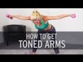 | How To Lose Arm Fat Sign up for our newsletter: http://goo.gl/UwnMd
Subscribe: http://goo.gl/qR0gi
On today's episode of XHIT, fitness trainer Rebecca-Louise shows you how to get toned arms in one workout. It's a quick but intense workout that hits your shoulders, biceps and triceps. Follow along to learn how to build muscle and shed fat in your arms. Leave us a comment and let us know what you thought!
Stay tuned to our channel for more episodes: http://goo.gl/c6p4j
Check out our other fun workouts:
1. How to Get Lean Legs: Calf Toner: http://goo.gl/vyyWQ
2. Fitness and Food: Best Butt Workout and Broccoli Recipe: http://goo.gl/3y1rV
3. Crossfit Workout: 5 Minutes of Hell: http://goo.gl/xcDK6
4. Fat Burning Towel Workout: http://goo.gl/0iD8Z
5. How to Burn 50 Calories in Less Than 3 Minutes: http://goo.gl/X7X5v
Check us out online: http://goo.gl/qVuTM
Facebook: http://goo.gl/HzUSX
Twitter: http://goo.gl/6esYW
Tumblr: http://goo.gl/Tmzhb
Pinterest: http://goo.gl/6tUk9
Instagram: http://goo.gl/mEIzd 13 min - 11 Jun 2013 |
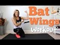 | Bye Bye BAT WINGS | Tricep & Arm Workout No more flabby arms! Tone your lose skin, strengthen your arms & get rid of bat wings with this Tricep & Arm Workout!
♥ Follow me on Instagram https://instagram.com/lovesweatfitness
♥ My 45lb Weight Loss Story https://youtu.be/Vzv82k9iIT8
♥ Join the LSF Girls Community & be part of #teamLSF ! Get FREE workouts, recipes & motivation right in your email...plus exclusive challenges & giveaways!
Sign up today! http://bit.ly/1zkQmwq
♥ Get in on all the fun, lets get sweaty together♥
Instagram: http://www.instagram.com/lovesweatfitness
Snapchat: https://www.snapchat.com/add/lovesweatandfit
Twitter: http://www.twitter.com/lovesweatandfit
Facebook: http://www.facebook.com/lovesweatandfitness
Pinterest: http://www.pinterest.com/lovesweatfit
Periscope: lovesweatfitness 8 min - 18 Oct 2016 |
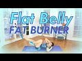 | Flat Belly Fat Burner | POP HIIT This year I want you to OWN your life and your body. Let's kick it off right with this routine that mixes my best ab exercises with intense cardio moves that will sculpt flat abs and a lean physique. Get my shirt, booty shorts & yoga mat at http://www.shopblogilates.com.
♥ CHECK OUT MY DVD: http://www.poppilatesdvd.com
♥ INSPIRATIONAL SHIRTS: http://www.shopblogilates.com
♥ SUBSCRIBE: http://bit.ly/blogilatesyt
♥ BLOG: http://www.blogilates.com
♥ FB: http://www.facebook.com/blogilates
♥ TWEET: http://www.twitter.com/blogilates
♥ TUMBLR: http://www.blogilates.tumblr.com
♥ PINTEREST: http://pinterest.com/blogilates
♥ INSTAGRAM: http://www.instagram.com/blogilates
Music by:
ViennieV: https://twitter.com/vienniev
"Waiting All My Life"
"Bad Place"
"Just One Word"
Hear more ViennieV here: https://itunes.apple.com/us/artist/viennie-v/id464888395
*****
Cassey Ho is a certified Pilates and fitness instructor, winner of YouTube Next Trainer, and was also recently named FITNESS Magazine's Best Healthy Living Blogger. 13 min - 6 Jan 2014 |
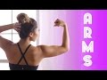 | Toned & Defined Arms Workout! No weights needed! It's time for another weightless arms workout! Oh boy - get ready for the burn guys - I've got 2 songs worth of arm toning exercises that will tone your biceps, shoulders, back, lats, and traps! This is one of my most fun and most effective POP Pilates arm workouts.
♥ Get all my workout calendars and read my blog: http://www.blogilates.com
♥ MY ACTIVEWEAR: http://www.popflexactive.com
♥ Get the Blogilates App FREE in the App Store or Google Play Store!
♥ INSTAGRAM: @Blogilates
♥ SNAPCHAT: @Blogilates
♥ FACEBOOK: http://www.facebook.com/blogilates
♥ TWITTER: http://www.twitter.com/blogilates
******
Cassey Ho is an award-winning fitness instructor, entrepreneur and online personality. She is the creator of Blogilates, the #1 female fitness channel on Youtube. In a revolutionary partnership, Cassey's unique format, POP Pilates© which launched on Youtube in 2009, has become a live class that can be taken at every 24 Hr Fitness gym in the US. She's the author of the best-selling book, Hot Body Year Round and is the designer of her own activewear line, POPFLEX.
***
DISCLAIMER:
Blogilates and oGorgeous Inc. strongly recommend that you consult with your physician before beginning any exercise program.
You should be in good physical condition and be able to participate in the exercise.
You should understand that when participating in any exercise or exercise program, there is the possibility of physical injury. If you engage in this exercise or exercise program, you agree that you do so at your own risk, are voluntarily participating in these activities, assume all risk of injury to yourself, and agree to release and discharge Blogilates and oGorgeous Inc. from any and all claims or causes of action, known or unknown, arising out of Blogilates' and oGorgeous Inc.'s negligence. 8 min - 12 Sep 2016 |
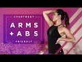 | Toned Arms + Flat Abs | Apartment Friendly Workout Welcome to my new Apartment Friendly Workout Series! There will be no jumping and no grumpy downstairs neighbors. So feel free to do these videos at any time of day, ANYWHERE! I promise you that there will be sore muscles, calorie burning, and a sweatier, stronger, and happier YOU!
This first workout is focusing on toning your arms as well as firming up your abdominal muscles.
See the NEW POPFLEX including the Danger Tank I'm wearing: http://www.popflexactive.com
Here is where I get all of my music! Perfect for a YouTuber!: https://goo.gl/Nj4ZMg
******
Cassey Ho is an award-winning fitness instructor, entrepreneur and online personality. She is the creator of Blogilates, the #1 female fitness channel on Youtube. In a revolutionary partnership, Cassey's unique format, POP Pilates© which launched on Youtube in 2009, has become a live class that can be taken at every 24 Hr Fitness gym in the US. She's the author of the best-selling book, Hot Body Year Round and is the designer of her own activewear line, POPFLEX.
***
DISCLAIMER:
Blogilates and oGorgeous Inc. strongly recommend that you consult with your physician before beginning any exercise program.
You should be in good physical condition and be able to participate in the exercise.
You should understand that when participating in any exercise or exercise program, there is the possibility of physical injury. If you engage in this exercise or exercise program, you agree that you do so at your own risk, are voluntarily participating in these activities, assume all risk of injury to yourself, and agree to release and discharge Blogilates and oGorgeous Inc. from any and all claims or causes of action, known or unknown, arising out of Blogilates' and oGorgeous Inc.'s negligence. 14 min - 28 May 2017 |
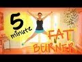 | 5 Minute FAT BURNER FREE WORKOUT CALENDAR: http://bit.ly/wocalendars The 5 best fat burning moves in 5 minutes: 1. Star Jumps, 2. In-n-Out Donkey Kicks, 3. Burpees, 4. Mountain Climbers, 5. Split Squat Jumps.
To see how many times you should do this routine, please follow my monthly workout calendars on http://www.blogilates.com.
Have fun!
♥ CHECK OUT MY DVD: http://www.poppilatesdvd.com
♥ INSPIRATIONAL SHIRTS: http://www.shopblogilates.com
♥ SUBSCRIBE: http://bit.ly/blogilatesyt
♥ BLOG: http://www.blogilates.com
♥ FB: http://www.facebook.com/blogilates
♥ TWEET: http://www.twitter.com/blogilates
♥ TUMBLR: http://www.blogilates.tumblr.com
♥ PINTEREST: http://pinterest.com/blogilates
♥ INSTAGRAM: http://www.instagram.com/blogilates
*****
Cassey Ho is a certified Pilates and fitness instructor, named Greatist's Top 100 Health & Fitness Influencers in the World alongside Michelle Obama. She is the winner of the "Social Fitness" Shorty Award and FITNESS Magazine named her their "Best Healthy Living Blogger". She's been featured on Dr. Oz, EXTRA TV, The Steve Harvey Show, COSMPOLITAN Magazine, SHAPE Magazine, Ladies Home Journal, SELF Magazine, NY Times, LA Times, and many more.
*****
DISCLAIMER:
Blogilates and oGorgeous Inc. strongly recommend that you consult with your physician before beginning any exercise program.
You should be in good physical condition and be able to participate in the exercise.
You should understand that when participating in any exercise or exercise program, there is the possibility of physical injury. If you engage in this exercise or exercise program, you agree that you do so at your own risk, are voluntarily participating in these activities, assume all risk of injury to yourself, and agree to release and discharge Blogilates and oGorgeous Inc. from any and all claims or causes of action, known or unknown, arising out of Blogilates' and oGorgeous Inc.'s negligence. 7 min - 21 Apr 2014 |
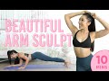 | 10 Minute Beautiful Arm Sculpt Pilates Workout | 7 Day Arm Challenge (Days 4-7) Join me for the #7DayArmChallenge!!! https://www.blogilates.com/7-day-arm-challenge-2020/
Four days into the 7 Day Arm Challenge... anyone feeling stronger already?! I know a lot of people struggle with upper body exercises and I am SO proud of you all for making it this far. Yeah, this is still the part where it gets even harder... meet your Beautiful Arm Sculpt!!!
7 DAY ARM CHALLENGE:
Purpose: To sculpt and tone your arms in 7 days!
Begins: Monday May 18, 2020
Ends: Sunday May 24, 2020
Length: 7 days
Daily commitment: 20-30 min
How it works:
Day 1-7: Take a before picture of your arms & complete the workouts listed for the day. You can even film yourself doing these and have a cool progress video that you can upload to Instagram, TikTok, or YouTube at the end of the week!
Day 1-7: Make sure to drink at least 64 oz of water a day for all 7 days.
Day 1-7: Make sure to reduce your intake of refined/processed carbs (bread, crackers, cereal, pastries etc.) and replace with whole vegetables and fruits for 7 days.
End of Day 7: Take an after picture or video of your arms and upload the results to Instagram, TikTok, or YouTube! Make sure to include the #7DayArmChallenge hashtag and tag @blogilates so other users can find the challenge!
BEAUTIFUL ARM SCULPT PILATES
1. Half cobra push up
2. Tricep kick & dip
3. Up up down down
4. Piked push up
5. Bent over shoulder press
We'll do each move for 45 seconds, with a 15 second break between. Let's do this!!!
Day 1
Lean Arms Cardio Pilates (20 min): https://youtu.be/Ai8KfyJ69Bc
Day 2
Lean Arms Cardio Pilates (20 min): https://youtu.be/Ai8KfyJ69Bc
Day 3
Lean Arms Cardio Pilates (20 min): https://youtu.be/Ai8KfyJ69Bc
Day 4
Lean Arms Cardio Pilates (20 min): https://youtu.be/Ai8KfyJ69Bc
Beautiful Arm Sculpt (10 min): https://youtu.be/lEvL80oCJQY
Day 5
Lean Arms Cardio Pilates (20 min): https://youtu.be/Ai8KfyJ69Bc
Beautiful Arm Sculpt (10 min): https://youtu.be/lEvL80oCJQY
Day 6
Lean Arms Cardio Pilates (20 min): https://youtu.be/Ai8KfyJ69Bc
Beautiful Arm Sculpt (10 min): https://youtu.be/lEvL80oCJQY
Day 7
Lean Arms Cardio Pilates (20 min): https://youtu.be/Ai8KfyJ69Bc
Beautiful Arm Sculpt (10 min): https://youtu.be/lEvL80oCJQY
#armworkout #pilates #poppilates #blogilates #challenge
Here is where I get all of my music! Epidemic Sound: http://share.epidemicsound.com/sgFTn
My outfit & yoga mat are from: http://www.popflexactive.com
******
Cassey Ho is an award-winning fitness instructor, entrepreneur and online personality. As the creator behind Blogilates, the #1 female fitness channel on YouTube, she’s transformed millions of lives through helping them achieve their strength and weight-loss goals. She focuses on making fitness fun and the results are evident. Cassey's unique format, POP Pilates©, which launched as a workout video on YouTube in 2009, has become a live fitness class that can be taken at gyms all over the world with over 3,000 POP Pilates classes being taught monthly. Her authenticity continues to shine through, making her one of the most relatable fitness icons online and beyond. She's also the author of the best-selling book, Hot Body Year Round and is the designer of her own activewear line, POPFLEX.
With a wide range of free workout videos available, Cassey's channel focuses on ab exercises, butt & thigh exercises, arm exercises, pilates, cardio routines, fat burning workouts, high intensity interval training workouts (HIIT), stretching and flexibility routines and so much more!
***
DISCLAIMER:
Blogilates and oGorgeous Inc. strongly recommend that you consult with your physician before beginning any exercise program.
You should be in good physical condition and be able to participate in the exercise.
You should understand that when participating in any exercise or exercise program, there is the possibility of physical injury. If you engage in this exercise or exercise program, you agree that you do so at your own risk, are voluntarily participating in these activities, assume all risk of injury to yourself, and agree to release and discharge Blogilates and oGorgeous Inc. from any and all claims or causes of action, known or unknown, arising out of Blogilates' and oGorgeous Inc.'s negligence. 14 min - 20 May 2020 |
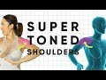 | 5 Weightless Shoulder Isolation Exercises for Super Toned Arms You know what I realized?! My shoulders are showing in almost EVERY workout video I've ever done! Crazy!!! Every time you wear a dress, tank top, bathing suit at the beach, anything sleeveless... BOOM shoulders! So the entire summer basically.
These apartment-friendly, equipment-free shoulder isolation exercises will tone up your major shoulder muscles, like the deltoid and trapezius!
Each move is 1:30... can you do it with no breaks?! Of course you can!!
1. Tipping Mermaid (Right)
2. Tipping Mermaid (Left)
3. Robot Arms
4. Elbow Pulses
5. Curly Arms
Workout starts at 1:44!
Here is where I get all of my music! Epidemic Sound: https://goo.gl/Nj4ZMg
My outfit & yoga mat are from: http://www.popflexactive.com
******
Cassey Ho is an award-winning fitness instructor, entrepreneur and online personality. As the creator behind Blogilates, the #1 female fitness channel on YouTube, she’s transformed millions of lives through helping them achieve their strength and weight-loss goals. She focuses on making fitness fun and the results are evident. Cassey's unique format, POP Pilates©, which launched as a workout video on YouTube in 2009, has become a live fitness class that can be taken at gyms all over the world with over 3,000 POP Pilates classes being taught monthly. Her authenticity continues to shine through, making her one of the most relatable fitness icons online and beyond. She's also the author of the best-selling book, Hot Body Year Round and is the designer of her own activewear line, POPFLEX.
With a wide range of free workout videos available, Cassey's channel focuses on ab exercises, butt & thigh exercises, arm exercises, pilates, cardio routines, fat burning workouts, high intensity interval training workouts (HIIT), stretching and flexibility routines and so much more!
***
DISCLAIMER:
Blogilates and oGorgeous Inc. strongly recommend that you consult with your physician before beginning any exercise program.
You should be in good physical condition and be able to participate in the exercise.
You should understand that when participating in any exercise or exercise program, there is the possibility of physical injury. If you engage in this exercise or exercise program, you agree that you do so at your own risk, are voluntarily participating in these activities, assume all risk of injury to yourself, and agree to release and discharge Blogilates and oGorgeous Inc. from any and all claims or causes of action, known or unknown, arising out of Blogilates' and oGorgeous Inc.'s negligence. 10 min - 29 Jul 2018 |
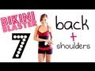 | Bikini Blaster 7: Bodacious Back + Sleek Shoulders *Find out how many calories this burns at http://bit.ly/bikiniblasterWT
*Get workout calendar: http://blogilates.com/calendar/june-2012-blogilates-workout-calendar
♥ READ MY BLOG: http://www.blogilates.com
♥ BLOGILATES FAN GEAR: http://www.shopblogilates.com
♥ FACEBOOK: http://www.facebook.com/blogilates
♥ TWITTER: http://www.twitter.com/blogilates
♥ TUMBLR: http://www.blogilates.tumblr.com
♥ PINTEREST: http://pinterest.com/blogilates
♥ INSTAGRAM: http://web.stagram.com/n/blogilates/
Tone up your back and shoulders with this workout led by fitness instructor Cassey Ho! You'll need a pair of dumbbells between 3-5 lbs.
BIKINI BLASTER PLAYLIST: http://www.youtube.com/playlist?list=PLF4B69F5F9CE08F66
POP SONG CHALLENGES PLAYLIST: http://www.youtube.com/playlist?list=PL2C4D620ABA5C536B 22 min - 28 Jun 2012 |
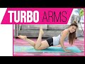 | 3 minute Toned Arms Workout | POP Pilates TURBO This workout is only 3 minutes but it is INTENSE! 6 moves, 30 seconds per move! Make sure you don't stop! Also, what do you think of my new living room!? Give this video a like if you want me to keep working out here!
♥ I HAVE A NEW DVD: http://www.poppilatesdvd.com
♥ INSPIRATIONAL SHIRTS: http://www.shopblogilates.com
♥ SUBSCRIBE: http://bit.ly/blogilatesyt
♥ BLOG: http://www.blogilates.com
♥ FB: http://www.facebook.com/blogilates
♥ TWEET: http://www.twitter.com/blogilates
♥ TUMBLR: http://www.blogilates.tumblr.com
♥ PINTEREST: http://pinterest.com/blogilates
♥ INSTAGRAM: http://www.instagram.com/blogilates
******
Cassey Ho is a certified Pilates and fitness instructor, named Greatist's Top 25 Health & Fitness Influencers in the World alongside Michelle Obama. She is the winner of the "Social Fitness" Shorty Award and FITNESS Magazine named her their "Best Healthy Living Blogger". She's been featured on Dr. Oz, EXTRA TV, The Steve Harvey Show, COSMPOLITAN Magazine, SHAPE Magazine, Ladies Home Journal, SELF Magazine, NY Times, LA Times, and many more.
***
DISCLAIMER:
Blogilates and oGorgeous Inc. strongly recommend that you consult with your physician before beginning any exercise program.
You should be in good physical condition and be able to participate in the exercise.
You should understand that when participating in any exercise or exercise program, there is the possibility of physical injury. If you engage in this exercise or exercise program, you agree that you do so at your own risk, are voluntarily participating in these activities, assume all risk of injury to yourself, and agree to release and discharge Blogilates and oGorgeous Inc. from any and all claims or causes of action, known or unknown, arising out of Blogilates' and oGorgeous Inc.'s negligence. 5 min - 24 Aug 2015 |
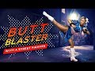 | KICK BUTT BLASTER | PIIT28 Street Fighter Inspired Workout Ready to get your butt and thighs WORKING?!? Our superhero themed PIIT28 workout series continues with inspiration from one of the toughest (and strongest!) characters ever, Chun-Li from Street Fighter! Today we’re burning fat with this total body workout and kicking away the negativity! Hiyahhh!
Your moves:
1. Shuffle bounce
2. Plié calf raise
3. Front kicks
4. Plié punches
5. Squat side kick right
6. Lunge kicks
7. Squat side kick left
Perform each move for 45 seconds. Rest 15 seconds in between. Repeat the entire series of moves 4 times through for a 28 minute long workout. If you want the entire PIIT28 experience, go to https://piit28.com!
Here is where I get all of my music! Epidemic Sound: https://goo.gl/Nj4ZMg
My outfit & yoga mat are from: http://www.popflexactive.com
******
Cassey Ho is an award-winning fitness instructor, entrepreneur and online personality. As the creator behind Blogilates, the #1 female fitness channel on YouTube, she’s transformed millions of lives through helping them achieve their strength and weight-loss goals. She focuses on making fitness fun and the results are evident. Cassey's unique format, POP Pilates©, which launched as a workout video on YouTube in 2009, has become a live fitness class that can be taken at gyms all over the world with over 3,000 POP Pilates classes being taught monthly. Her authenticity continues to shine through, making her one of the most relatable fitness icons online and beyond. She's also the author of the best-selling book, Hot Body Year Round and is the designer of her own activewear line, POPFLEX.
With a wide range of free workout videos available, Cassey's channel focuses on ab exercises, butt & thigh exercises, arm exercises, pilates, cardio routines, fat burning workouts, high intensity interval training workouts (HIIT), stretching and flexibility routines and so much more!
***
DISCLAIMER:
Blogilates and oGorgeous Inc. strongly recommend that you consult with your physician before beginning any exercise program.
You should be in good physical condition and be able to participate in the exercise.
You should understand that when participating in any exercise or exercise program, there is the possibility of physical injury. If you engage in this exercise or exercise program, you agree that you do so at your own risk, are voluntarily participating in these activities, assume all risk of injury to yourself, and agree to release and discharge Blogilates and oGorgeous Inc. from any and all claims or causes of action, known or unknown, arising out of Blogilates' and oGorgeous Inc.'s negligence. 9 min - 22 Oct 2017 |
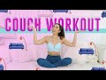 | At Home Total Body Slimming Workout - Using Only a Couch! Now that we're doing all our workouts at home, it's time to get resourceful. There are SO MANY regular household items you can turn into exercise equipment, and today we're using my fave spot... the couch!! We're gonna work the whole body - arms, abs, legs, you name it!!
You've got 10 moves, one minute on, 10 seconds off:
1. Squats
2. Squat Knee Tuck
3. Tricep Dips
4. Split Lunge (R)
5. Split Lunge (L)
6. Couch Climbs
7. Leg Outs
8. Couch Taps
9. Russian Twists
10. Couch Arm Balance
Workout starts at 1:13!
April workout calendar: https://www.blogilates.com/april-2020-workout-calendar-2/
Here is where I get all of my music! Epidemic Sound: http://share.epidemicsound.com/sgFTn
My outfit & yoga mat are from: http://www.popflexactive.com
******
Cassey Ho is an award-winning fitness instructor, entrepreneur and online personality. As the creator behind Blogilates, the #1 female fitness channel on YouTube, she’s transformed millions of lives through helping them achieve their strength and weight-loss goals. She focuses on making fitness fun and the results are evident. Cassey's unique format, POP Pilates©, which launched as a workout video on YouTube in 2009, has become a live fitness class that can be taken at gyms all over the world with over 3,000 POP Pilates classes being taught monthly. Her authenticity continues to shine through, making her one of the most relatable fitness icons online and beyond. She's also the author of the best-selling book, Hot Body Year Round and is the designer of her own activewear line, POPFLEX.
With a wide range of free workout videos available, Cassey's channel focuses on ab exercises, butt & thigh exercises, arm exercises, pilates, cardio routines, fat burning workouts, high intensity interval training workouts (HIIT), stretching and flexibility routines and so much more!
***
DISCLAIMER:
Blogilates and oGorgeous Inc. strongly recommend that you consult with your physician before beginning any exercise program.
You should be in good physical condition and be able to participate in the exercise.
You should understand that when participating in any exercise or exercise program, there is the possibility of physical injury. If you engage in this exercise or exercise program, you agree that you do so at your own risk, are voluntarily participating in these activities, assume all risk of injury to yourself, and agree to release and discharge Blogilates and oGorgeous Inc. from any and all claims or causes of action, known or unknown, arising out of Blogilates' and oGorgeous Inc.'s negligence. #homeworkout #fullbodyworkout #totalbodyworkout 15 min - 19 Apr 2020 |
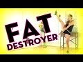 | Fat Destroyer - BEST Cardio Workout It's been a long time since I've made a cardio workout for you, but today we end the drought! Let me see your sweat with one of my most FUN and intense cardio routines. Let's go and BURN SOME FAT!!!
♥ CHECK OUT MY DVD: http://www.poppilatesdvd.com
♥ INSPIRATIONAL SHIRTS: http://www.shopblogilates.com
♥ SUBSCRIBE: http://bit.ly/blogilatesyt
♥ BLOG: http://www.blogilates.com
♥ FB: http://www.facebook.com/blogilates
♥ TWEET: http://www.twitter.com/blogilates
♥ TUMBLR: http://www.blogilates.tumblr.com
♥ PINTEREST: http://pinterest.com/blogilates
♥ INSTAGRAM: http://www.instagram.com/blogilates
******
Cassey Ho is a certified Pilates and fitness instructor, named Greatist's Top 100 Health & Fitness Influencers in the World alongside Michelle Obama. She is the winner of the "Social Fitness" Shorty Award and FITNESS Magazine named her their "Best Healthy Living Blogger". She's been featured on Dr. Oz, EXTRA TV, The Steve Harvey Show, COSMPOLITAN Magazine, SHAPE Magazine, Ladies Home Journal, SELF Magazine, NY Times, LA Times, and many more.
***
DISCLAIMER:
Blogilates and oGorgeous Inc. strongly recommend that you consult with your physician before beginning any exercise program.
You should be in good physical condition and be able to participate in the exercise.
You should understand that when participating in any exercise or exercise program, there is the possibility of physical injury. If you engage in this exercise or exercise program, you agree that you do so at your own risk, are voluntarily participating in these activities, assume all risk of injury to yourself, and agree to release and discharge Blogilates and oGorgeous Inc. from any and all claims or causes of action, known or unknown, arising out of Blogilates' and oGorgeous Inc.'s negligence. 8 min - 10 Aug 2014 |
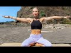 | 5 Minutes Arm Workout For Toning | How To Lose Arm Fat An incredible 5 minute arm workout that will tone and sculpt like never before. If you struggling to lose extra arm fat or simply looking for a way to gain more lean muscle definition, well this workout is for you! Without having to use any weight resistance or other props, we will use the force of gravity to do this super quick and effective upper body workout that will make you feel the burn in under 5 minutes. If you're struggling with 'saggy' and weak arms, or are in need of something that will strengthen every small and big muscle group in your upper body then this workout is for you!
This Boho Beautiful 5 minute arms miracle is the perfect workout class to do at the end of your other workouts, or if you need to take a little 5 minute break away from your everyday life and challenge the mind and body in a new way.
You can do this Pilates inspired arm workout sitting or standing. And if you focus on including this upper body toning movements into your daily routine, I promise you will see incredible results in no time.
FULL LENGTH DOWNLOAD & STREAMABLE FULL LENGTH PROGRAMS:
Boho Beautiful Retreat Program:
https://bohobeautiful.life/product/retreat
Exclusive Member Videos:
https://www.patreon.com/bohobeautiful
New Full Length Fitness Program:
https://bohobeautiful.life/transform/
Intro Song:
Soul Changing by Maya Isacowitz
MORE FREE YOGA VIDEOS:
Total Body Yoga Workout in Greece:
https://youtu.be/B98Gi20riog
Best Yoga Workout For Arms & Booty
https://youtu.be/erOGuFpK8RA
Yoga Workout Flow | 20 Minute Full Body Workout
https://youtu.be/j77wT96jHCI
Help Translate Our Videos To Your Language Here:
https://www.youtube.com/timedtext_cs_panel?c=UCWN2FPlvg9r-LnUyepH9IaQ&tab=2
#BohoBeautiful #armworkout #homefitness
----------------------------------------------------------------------------------------------------------
Boho Beautiful is a yoga fitness lifestyle channel that is creating positive content for your body, mind, and the earth. Yoga, Wanderlust, Fitness, Vegan food, Conscious Living, and Meditation!
Thank you so much for watching and subscribing to our channel!
Connect With Us!
Patreon: https://www.patreon.com/bohobeautiful
Facebook: http://facebook.com/bohobeautifullife
Instagram- http://instagram.com/bohobeautifullife
https://www.bohobeautiful.life
———————————————————————————————————————
DISCLAIMER:
Please consult your doctor before starting any diet or exercise program. By using our videos, you understand and agree that neither Boho Beautiful Ltd. nor any persons associated with it have any liability to you for any injury or loss you may suffer in connection with any content we may post. 6 min - 28 Mar 2020 |
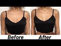 | Get Rid Of Armpit Fat in 1 WEEK (Lean & Sexy Arm WORKOUT) My first music video - would mean the world if you watched
https://www.youtube.com/watch?v=WPIG8uDWzcg 7 min - 1 Apr 2018 |
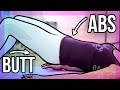 | Lower Abs & Booty Blast | POP Pilates From teaching for over 10 years, I know that the 2 areas women want to work most are their lower abs and their butt! So today's video is an incredible fusing of the muscle groups to tighten and lift your lower body. You'll love how each move melds with the music perfectly.
♥ I HAVE A NEW DVD: http://www.poppilatesdvd.com
♥ INSPIRATIONAL SHIRTS: http://www.shopblogilates.com
♥ SUBSCRIBE: http://bit.ly/blogilatesyt
♥ BLOG: http://www.blogilates.com
♥ FB: http://www.facebook.com/blogilates
♥ TWEET: http://www.twitter.com/blogilates
♥ TUMBLR: http://www.blogilates.tumblr.com
♥ PINTEREST: http://pinterest.com/blogilates
♥ INSTAGRAM: http://www.instagram.com/blogilates
******
Cassey Ho is a certified Pilates and fitness instructor, named Greatist's Top 25 Health & Fitness Influencers in the World alongside Michelle Obama. She is the winner of the "Social Fitness" Shorty Award and FITNESS Magazine named her their "Best Healthy Living Blogger". She's been featured on Dr. Oz, EXTRA TV, The Steve Harvey Show, COSMPOLITAN Magazine, SHAPE Magazine, Ladies Home Journal, SELF Magazine, NY Times, LA Times, and many more.
***
DISCLAIMER:
Blogilates and oGorgeous Inc. strongly recommend that you consult with your physician before beginning any exercise program.
You should be in good physical condition and be able to participate in the exercise.
You should understand that when participating in any exercise or exercise program, there is the possibility of physical injury. If you engage in this exercise or exercise program, you agree that you do so at your own risk, are voluntarily participating in these activities, assume all risk of injury to yourself, and agree to release and discharge Blogilates and oGorgeous Inc. from any and all claims or causes of action, known or unknown, arising out of Blogilates' and oGorgeous Inc.'s negligence. 15 min - 17 Aug 2015 |
.jpg) | SNOWBUNNY BLAST - at home cardio to burn fat! Snowbunny Blast - a FUN way to do cardio at home without having to run on a treadmill! I've put together 7 fat blasting moves that you will do for 45 sec. You will rest 15 sec in between. Then you shall repeat this 4x! Grab the printable here: http://www.blogilates.com/blog/2015/12/01/snowbunny-blast/
Download the Blogilates App (free) and get the timer here:
iPhone: http://bit.ly/blogilatesapp
Android: http://bit.ly/blogilatesappdroid
♥ I HAVE A NEW DVD: http://www.poppilatesdvd.com
♥ INSPIRATIONAL SHIRTS: http://www.shopblogilates.com
♥ SUBSCRIBE: http://bit.ly/blogilatesyt
♥ BLOG: http://www.blogilates.com
♥ FB: http://www.facebook.com/blogilates
♥ TWEET: http://www.twitter.com/blogilates
♥ TUMBLR: http://www.blogilates.tumblr.com
♥ PINTEREST: http://pinterest.com/blogilates
♥ INSTAGRAM: http://www.instagram.com/blogilates
******
Cassey Ho is a certified Pilates and fitness instructor, named Greatist's Top 25 Health & Fitness Influencers in the World alongside Michelle Obama. She is the winner of the "Social Fitness" Shorty Award and FITNESS Magazine named her their "Best Healthy Living Blogger". She's been featured on Dr. Oz, EXTRA TV, The Steve Harvey Show, COSMPOLITAN Magazine, SHAPE Magazine, Ladies Home Journal, SELF Magazine, NY Times, LA Times, and many more.
***
DISCLAIMER:
Blogilates and oGorgeous Inc. strongly recommend that you consult with your physician before beginning any exercise program.
You should be in good physical condition and be able to participate in the exercise.
You should understand that when participating in any exercise or exercise program, there is the possibility of physical injury. If you engage in this exercise or exercise program, you agree that you do so at your own risk, are voluntarily participating in these activities, assume all risk of injury to yourself, and agree to release and discharge Blogilates and oGorgeous Inc. from any and all claims or causes of action, known or unknown, arising out of Blogilates' and oGorgeous Inc.'s negligence. 10 min - 7 Dec 2015 |
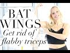 | BAT WINGS II GET RID OF FLABBY TRICEPS | TRACY CAMPOLI https://tracycampolimembers.com/
Bat Wings II How to get rid of FLABBY ARMS with Tracy Campoli. Tone up loose skin, bat wings and dangly arms with this weightless arm workout.
♥ FOR FULL LENGTH WORKOUTS: https://tracycampolimembers.com/
♥ SUBSCRIBE FOR NEW VIDEOS: http://bit.ly/1eMvVaQ
-------MORE WAYS TO CONNECT!--------
♥JOIN ME: http://tracycampoli.com/
♥FOLLOW: https://twitter.com/TracyCampoli
♥LIKE: http://on.fb.me/1bhZl5V
♥LOOK: http://instagram.com/tracycampoli
♥PIN: http://www.pinterest.com/TracyCampoli1/
♥SUBSCRIBE: http://bit.ly/1eMvVaQ
DISCLAIMER: This post & video is designed for educational and/or informational purposes only and should not be used in any other manner. This information is not intended to substitute informed medical advice. You should not use this information to diagnose or treat a health problem or disease without consulting with a qualified health care provider. A consultation with your health care professional is the proper method to address your health concerns. You are encouraged to consult your health care provider with any questions or concerns you may have regarding your condition. 9 min - 18 Jul 2016 |
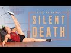 | Silent Death Fat Melting Cardio - Apartment Friendly | PIIT28 I wanted to make this apartment-friendly workout for you guys because getting a good workout in without disturbing your neighbors is so hard. I mean, when I lived in an apartment on the FIRST FLOOR, my UPSTAIRS neighbors would always bang on their floor when I worked out. I still don't get it!!!
It's definitely hard to get a solid cardio workout in when you feel like you have to walk on eggshells, but these seven total body toning PIIT moves are are all super quiet fat burning exercises that are easy to do at home!!
Do you have any crazy neighbors? Tell me about them in the comments!!
Remember to go as hard as you can for 45 seconds before your 15 second rest on each move!! I wanna see you guys shake!! Do 4 rounds for a total 28 minute workout.
1. Fast squats
2. Hip twists
3. Alternating front lunge
4. Leg outs
5. Single legged squat & lift
6. Push up ankle tap
7. Plié punches
You can replay this video three more times if you want to get the full workout, or just download the PIIT Pocket app and create the custom workout there!
PIIT Pocket for iPhone: bit.ly/piitpocket
PIIT Pocket for Android: bit.ly/piitpocketandroid
Workout starts at 1:33!
Here is where I get all of my music! Epidemic Sound: https://goo.gl/Nj4ZMg
My outfit & yoga mat are from: http://www.popflexactive.com
******
Cassey Ho is an award-winning fitness instructor, entrepreneur and online personality. As the creator behind Blogilates, the #1 female fitness channel on YouTube, she’s transformed millions of lives through helping them achieve their strength and weight-loss goals. She focuses on making fitness fun and the results are evident. Cassey's unique format, POP Pilates©, which launched as a workout video on YouTube in 2009, has become a live fitness class that can be taken at gyms all over the world with over 3,000 POP Pilates classes being taught monthly. Her authenticity continues to shine through, making her one of the most relatable fitness icons online and beyond. She's also the author of the best-selling book, Hot Body Year Round and is the designer of her own activewear line, POPFLEX.
With a wide range of free workout videos available, Cassey's channel focuses on ab exercises, butt & thigh exercises, arm exercises, pilates, cardio routines, fat burning workouts, high intensity interval training workouts (HIIT), stretching and flexibility routines and so much more!
***
DISCLAIMER:
Blogilates and oGorgeous Inc. strongly recommend that you consult with your physician before beginning any exercise program.
You should be in good physical condition and be able to participate in the exercise.
You should understand that when participating in any exercise or exercise program, there is the possibility of physical injury. If you engage in this exercise or exercise program, you agree that you do so at your own risk, are voluntarily participating in these activities, assume all risk of injury to yourself, and agree to release and discharge Blogilates and oGorgeous Inc. from any and all claims or causes of action, known or unknown, arising out of Blogilates' and oGorgeous Inc.'s negligence.
#piit
#piitpocket
#cardio
#workoutvideo 9 min - 23 Sep 2018 |
Backless Bride Back Toning Workout | BRIDAL BOOTCAMP I love love LOVE backless dresses. So gonna let you in on a little secret...my wedding dress is actually going to backless! But that is all I will tell you! But because of this, I made sure to make us the BEST backless dress workout that was ever created!
The great thing about working your back is that it will improve your posture, make you look taller, and also look more confident! It's a win for you big time. Lucky for you, there is no equipment, you don't need a gym, and you can do this workout anywhere! But especially at home :) Have fun!
Every workout in the Blogilates Bridal Bootcamp is 10 minutes long with NO BREAKS. There are 10 moves that are done for 1 minute each, back to back. I'm training you this way to save you time while teaching your muscles to get stronger with intense moves in a very short amount of time.
The 10 cardio exercises for your Bridal Bootcamp are:
1. Walnut Crushers
2. Goal Post Puncher
3. Reverse Plank Lifts
4. Bird Dog Pulses R
5. Bird Dog Pulses L
6. Parachuters
7. Half Cobra Grasshopper
8. Snow Angel Belly
9. Flying Bird Dog R
10. Flying Bird Dog L
If you are starting to do some of your own wedding planning, I recommend you check out http://www.TheKnot.com. You can create your own wedding website for free as well as search for great vendors in your area.
BIG THANKS TO my friends at Lovesome Blossoms and DJZ Productions for the INCREDIBLE floral display and draping!
LOVESOME BLOSSOMS: https://www.instagram.com/lovesomeblossoms/
DJZ PRODUCTIONS: https://www.instagram.com/djz_productions/
Here is where I get all of my music! Epidemic Sound: https://goo.gl/Nj4ZMg
******
Cassey Ho is an award-winning fitness instructor, entrepreneur and online personality. As the creator behind Blogilates, the #1 female fitness channel on YouTube, she’s transformed millions of lives through helping them achieve their strength and weight-loss goals. She focuses on making fitness fun and the results are evident. Cassey's unique format, POP Pilates©, which launched as a workout video on YouTube in 2009, has become a live fitness class that can be taken at gyms all over the world with over 3,000 POP Pilates classes being taught monthly. Her authenticity continues to shine through, making her one of the most relatable fitness icons online and beyond. She's also the author of the best-selling book, Hot Body Year Round and is the designer of her own activewear line, POPFLEX.
With a wide range of free workout videos available, Cassey's channel focuses on ab exercises, butt & thigh exercises, arm exercises, pilates, cardio routines, fat burning workouts, high intensity interval training workouts (HIIT), stretching and flexibility routines and so much more!
***
DISCLAIMER:
Blogilates and oGorgeous Inc. strongly recommend that you consult with your physician before beginning any exercise program.
You should be in good physical condition and be able to participate in the exercise.
You should understand that when participating in any exercise or exercise program, there is the possibility of physical injury. If you engage in this exercise or exercise program, you agree that you do so at your own risk, are voluntarily participating in these activities, assume all risk of injury to yourself, and agree to release and discharge Blogilates and oGorgeous Inc. from any and all claims or causes of action, known or unknown, arising out of Blogilates' and oGorgeous Inc.'s negligence. 14 min - 8 Apr 2018 |
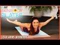 | Bikini Body Pilates: Lean Arms Workout- Cassey Ho BeFiT Bikini Body Pilates: Lean Arms Workout with Cassey Ho is a supercharged, upper body-sculpting Pilates routine that is designed to work all of the muscles of the upper half to burn fat, build definition, and target tone the arms, chest, back, shoulders, glutes, biceps, triceps, abs and obliques for strong and sexy results. Activate the core and build strength with Pilates Expert, Blogilates Creator, Blogger and YouTube Star, Cassey Ho as she takes you through this result-driven, 12-minute workout from the all new "BeFiT Bikini Body Pilates" series that will strengthen the abdominals, lift and tighten the chest, arms, and butt, and banish bra fat just in time for bikini season! Prepare to fight through the burn as you ignite your weight loss potential with targeted moves like half cobra push-ups, super hero pulses, wing flaps, child's pose, single chest press pulses and up down planks that will sculpt a strong and sexy back and arms fast! This workout requires only your own body weight and a Yoga mat, and is great for all skill levels. Use the modifications provided to lower the level of difficulty. Cassey's upbeat and positive training style will keep you inspired and motivated as you attack problem areas, working multiple muscles simultaneously to transform your lower half. Now you can tone-up and slim down at home with one of the top trainers in the business. Shape your backside and tone your legs with BeFiT. For BeFiT Bikini Body Pilates Workouts, Click here: http://bit.ly/1flKLKw
CLICK HERE to go to BEFIT.COM
http://www.befit.com/?utm_source=youtube&utm_medium=Befitchannel&utm_campaign=annoHome
Click to Subscribe to BefiT on Amazon Instant Video for Workout Solutions for Every Body!
http://www.befit.com/subscribe/?utm_source=youtube&utm_medium=YTOrganic&utm_campaign=annoDR
Check out Cassey's Channel here:
https://www.youtube.com/user/blogilates
Click Here to Subscribe to the BeFit channel:
http://www.youtube.com/subscription_center?add_user=Befit
For full selection of great workouts like this one, visit the BeFit Channel on YouTube:
http://www.youtube.com/befit
Check out our official website at:
http://www.lionsgatebefit.com
Check us out on Facebook
http://www.facebook.com/lionsgatebefit
Follow us on Twitter at:
http://www.twitter.com/lionsgatebefit
Check us out on Google+
https://plus.google.com/104994741925506474033/posts
Check us out on Pinterest
http://www.pinterest.com/lionsgatebefit
To purchase DVD's, Check out the Lionsgate Fitness store at:
http://www.lionsgateshop.com/search_results.asp?type=fitness&GenreId=8 13 min - 25 Mar 2014 |
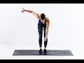 | At Home ARM TONING Workout // With Weights At Home ARM TONING Workout // With Weights
Visit: https://www.heatherrobertson.com
Grab a set of dumbbells and follow along to today's at home arm toning workout! We are going to create tone and definition while building strength in the shoulders, biceps + triceps!
Where I get my Music *Try it FREE for 30 days*
http://share.epidemicsound.com/zj9WV
My Go-To Supplements, Beauty Products + More: https://www.amazon.com/shop/heatherrobertson
L I N K S
Website: http://www.heatherrobertson.com
Instagram: http://www.instagram.com/heatherrobertsoncom
Twitter: http://www.twitter.com/followheatherr
Facebook: http://www.facebook.com/heatherrobertsoncom
______________________________
D I S C L A I M E R
This is my own personal workout and may not be suited for you. It is strongly recommend that you consult with your physician before beginning any exercise program. By engaging in this exercise or exercise program, you agree that you do so at your own risk.
______________________________
Thanks for watching!
❤ Heather 13 min - 24 Jan 2019 |
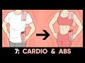 | Fat Melter & Ab Trainer // SUNDAY // 28-Day Summer Sculpt Download your 28 Day Summer Sculpt workout calendar: https://www.blogilates.com/28daysummersculpt/
You guys are just 30 minutes away from crushing a full week of the 28 Day Summer Sculpt! Remember ALL the hard work you've put in this week (especially while you're doing the burpees with push ups. Sorry not sorry.) and use that motivation to make this your best workout yet!!
Don't forget that your warm up and cool down are included in this video!
Your Cardio & Ab exercises:
Alt. Side Lunges
Roll Up
Burpee With Push Up
Star Abs
Double Pulse Split Jump
Candlestick Dipper (R)
Lunge Squats
Candlestick Dipper (L)
Victory Lunges
Plank
Workout starts at 2:40!
Enter to win a today's POPFLEX giveaway: https://www.instagram.com/popflex_active/
Here is where I get all of my music! Epidemic Sound: http://share.epidemicsound.com/sgFTn
My outfit & yoga mat are from: http://www.popflexactive.com
******
Cassey Ho is an award-winning fitness instructor, entrepreneur and online personality. As the creator behind Blogilates, the #1 female fitness channel on YouTube, she’s transformed millions of lives through helping them achieve their strength and weight-loss goals. She focuses on making fitness fun and the results are evident. Cassey's unique format, POP Pilates©, which launched as a workout video on YouTube in 2009, has become a live fitness class that can be taken at gyms all over the world with over 3,000 POP Pilates classes being taught monthly. Her authenticity continues to shine through, making her one of the most relatable fitness icons online and beyond. She's also the author of the best-selling book, Hot Body Year Round and is the designer of her own activewear line, POPFLEX.
With a wide range of free workout videos available, Cassey's channel focuses on ab exercises, butt & thigh exercises, arm exercises, pilates, cardio routines, fat burning workouts, high intensity interval training workouts (HIIT), stretching and flexibility routines and so much more!
***
DISCLAIMER:
Blogilates and oGorgeous Inc. strongly recommend that you consult with your physician before beginning any exercise program.
You should be in good physical condition and be able to participate in the exercise.
You should understand that when participating in any exercise or exercise program, there is the possibility of physical injury. If you engage in this exercise or exercise program, you agree that you do so at your own risk, are voluntarily participating in these activities, assume all risk of injury to yourself, and agree to release and discharge Blogilates and oGorgeous Inc. from any and all claims or causes of action, known or unknown, arising out of Blogilates' and oGorgeous Inc.'s negligence. 35 min - 8 Jun 2019 |
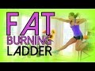 | Fat Burning Ladder for Toned Thighs and Sculpted Abs No, you don't need a ladder! It's equipment free. This is a timed HIIT (high intensity interval training) and fat burning, muscle toning routine! Here's how it works: The first round, you do each move for 45 sec each. Second round is 30 sec a move. And third and final round is 20 sec a move. The moves are:
1. Froggy hops
2. Pushup plank
3. Inner Thigh lunge
4. Criss-cross abs
Have fun!
♥ CHECK OUT MY DVD: http://www.poppilatesdvd.com
♥ INSPIRATIONAL SHIRTS: http://www.shopblogilates.com
♥ SUBSCRIBE: http://bit.ly/blogilatesyt
♥ BLOG: http://www.blogilates.com
♥ FB: http://www.facebook.com/blogilates
♥ TWEET: http://www.twitter.com/blogilates
♥ TUMBLR: http://www.blogilates.tumblr.com
♥ PINTEREST: http://pinterest.com/blogilates
♥ INSTAGRAM: http://www.instagram.com/blogilates
******
Cassey Ho is a certified Pilates and fitness instructor, named Greatist's Top 100 Health & Fitness Influencers in the World alongside Michelle Obama. She is the winner of the "Social Fitness" Shorty Award and FITNESS Magazine named her their "Best Healthy Living Blogger". She's been featured on Dr. Oz, EXTRA TV, The Steve Harvey Show, COSMPOLITAN Magazine, SHAPE Magazine, Ladies Home Journal, SELF Magazine, NY Times, LA Times, and many more.
***
DISCLAIMER:
Blogilates and oGorgeous Inc. strongly recommend that you consult with your physician before beginning any exercise program.
You should be in good physical condition and be able to participate in the exercise.
You should understand that when participating in any exercise or exercise program, there is the possibility of physical injury. If you engage in this exercise or exercise program, you agree that you do so at your own risk, are voluntarily participating in these activities, assume all risk of injury to yourself, and agree to release and discharge Blogilates and oGorgeous Inc. from any and all claims or causes of action, known or unknown, arising out of Blogilates' and oGorgeous Inc.'s negligence. 8 min - 8 Sep 2014 |
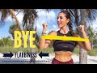 | Eliminate Fat from the Armpits and Toning Arms Workout with Elastic Bands Eliminate underarm fat and tone arms with elastic bands is what you get with these arms exercises designed for women. Burn fat and lower the arms workout. The perfect fitness exercises to do at home!
Take control of your workout plan with my Downloadable Calendar.
- Create a daily ritual.
- At home. With your family. Without any pressure. Enjoying yourself 100%.
- With only 20 minutes a day.
- What will you achieve with my downloadable calendar?
- You will stop feeling lost, not knowing which exercises to do each day and how to complement them
with an adequate diet.
- You will have the certainty that your workout plan leads to your fitness and health goals.
- You will sculpt your body without the need of spending time going to the gym.
- You will strengthen your self-esteem, feeling better and more motivated.
- You will be waiting for your workout sessions eagerly, instead of forcing yourself to go to the gym!
- You will get the feeling that you are doing something important for your beauty, your body, and your
health.
Get your monthly workout calendar now at https://www.funfitt.com/workout-calendar/ 12 min - 17 Jul 2019 |
Fight the Fat Workout | Sailor Moon Inspired PIIT28 Workout OMG GUYS! Okay, so I loooved Sailor Moon so much as a kid and watched it all the time. Getting to dress up and include the Blogifam as the Sailor Scouts felt like a childhood dream come true. But most importantly, today’s superhero themed PIIT28 workout is gonna give you a gooood sweat. With this total body workout, you’ll be ready to fight evil in no time! So c’mon! Let’s kill it!
Your moves:
1. Quick feet
2. Moon abs
3. Plank jacks
4. Meatball heads
5. Luna lunges
6. Transformation triceps
7. Crescent crunches
Perform each move for 45 seconds. Rest 15 seconds in between. Repeat the entire series of moves 4 times through for a 28 minute long workout. If you want the entire PIIT28 experience, go to https://piit28.com!
Here is where I get all of my music! Epidemic Sound: https://goo.gl/Nj4ZMg
My outfit & yoga mat are from: http://www.popflexactive.com
******
Cassey Ho is an award-winning fitness instructor, entrepreneur and online personality. As the creator behind Blogilates, the #1 female fitness channel on YouTube, she’s transformed millions of lives through helping them achieve their strength and weight-loss goals. She focuses on making fitness fun and the results are evident. Cassey's unique format, POP Pilates©, which launched as a workout video on YouTube in 2009, has become a live fitness class that can be taken at gyms all over the world with over 3,000 POP Pilates classes being taught monthly. Her authenticity continues to shine through, making her one of the most relatable fitness icons online and beyond. She's also the author of the best-selling book, Hot Body Year Round and is the designer of her own activewear line, POPFLEX.
With a wide range of free workout videos available, Cassey's channel focuses on ab exercises, butt & thigh exercises, arm exercises, pilates, cardio routines, fat burning workouts, high intensity interval training workouts (HIIT), stretching and flexibility routines and so much more!
***
DISCLAIMER:
Blogilates and oGorgeous Inc. strongly recommend that you consult with your physician before beginning any exercise program.
You should be in good physical condition and be able to participate in the exercise.
You should understand that when participating in any exercise or exercise program, there is the possibility of physical injury. If you engage in this exercise or exercise program, you agree that you do so at your own risk, are voluntarily participating in these activities, assume all risk of injury to yourself, and agree to release and discharge Blogilates and oGorgeous Inc. from any and all claims or causes of action, known or unknown, arising out of Blogilates' and oGorgeous Inc.'s negligence. 9 min - 8 Oct 2017 |
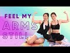 | Feel My Arms Still Workout Challenge | Feel It Still by Portugal. The Man My sister's fave song of the moment is "Feel it Still" by Portugal The Man so I wanted to do a workout challenge duet with her for our arms! We collaborated on some new and never before seen weightless arm exercises that are sure to burn your shoulders, your BICEPS (which is so hard to work without weights), and your chest. Seriously guys, these arm toning exercises are NO JOKE. Probably one of the harder weightless arm series I've done! See if you can last!
If for whatever reason you're a workout maniac and want to make this harder, try holding light weights in your hands! But honestly you won't need to if you're engaging your muscles and holding the proper form. Be sure to sit tall and put all your energy into your upper body. Do you best not to stop! The more your train your mind to be strong, the tougher your body and your endurance will be!
Follow my sister Jackelyn on Instagram: https://www.instagram.com/jackelynho/
My outfit & yoga mat are from: http://www.popflexactive.com
******
Cassey Ho is an award-winning fitness instructor, entrepreneur and online personality. As the creator behind Blogilates, the #1 female fitness channel on YouTube, she’s transformed millions of lives through helping them achieve their strength and weight-loss goals. She focuses on making fitness fun and the results are evident. Cassey's unique format, POP Pilates©, which launched as a workout video on YouTube in 2009, has become a live fitness class that can be taken at gyms all over the world with over 3,000 POP Pilates classes being taught monthly. Her authenticity continues to shine through, making her one of the most relatable fitness icons online and beyond. She's also the author of the best-selling book, Hot Body Year Round and is the designer of her own activewear line, POPFLEX.
With a wide range of free workout videos available, Cassey's channel focuses on ab exercises, butt & thigh exercises, arm exercises, pilates, cardio routines, fat burning workouts, high intensity interval training workouts (HIIT), stretching and flexibility routines and so much more!
***
DISCLAIMER:
Blogilates and oGorgeous Inc. strongly recommend that you consult with your physician before beginning any exercise program.
You should be in good physical condition and be able to participate in the exercise.
You should understand that when participating in any exercise or exercise program, there is the possibility of physical injury. If you engage in this exercise or exercise program, you agree that you do so at your own risk, are voluntarily participating in these activities, assume all risk of injury to yourself, and agree to release and discharge Blogilates and oGorgeous Inc. from any and all claims or causes of action, known or unknown, arising out of Blogilates' and oGorgeous Inc.'s negligence. 7 min - 21 Jan 2018 |
Select
Cancel